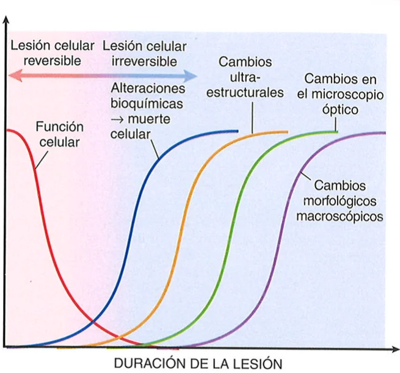
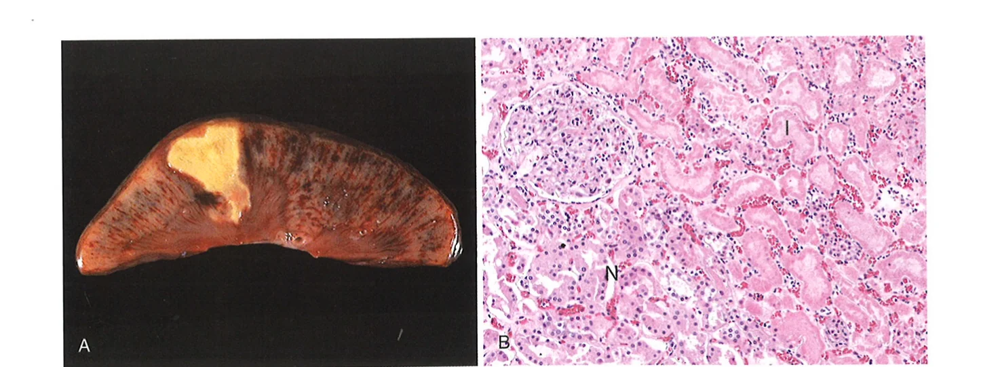
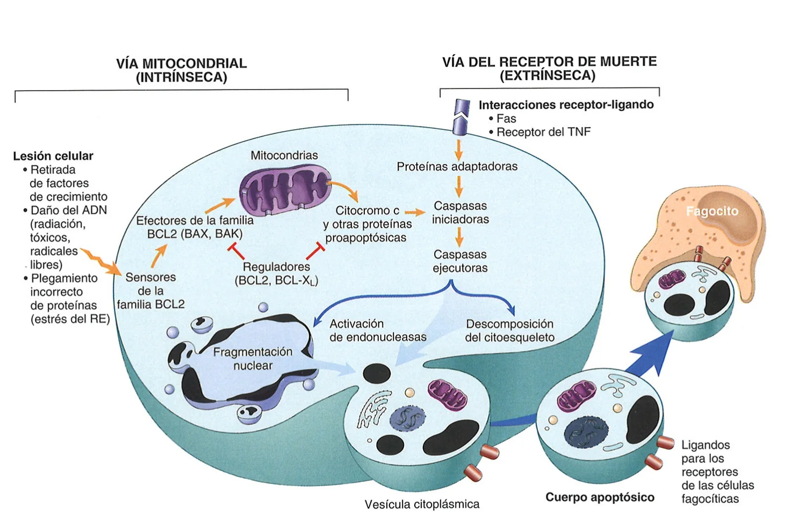
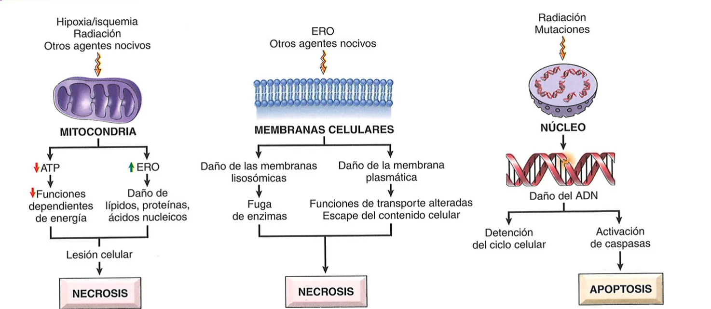
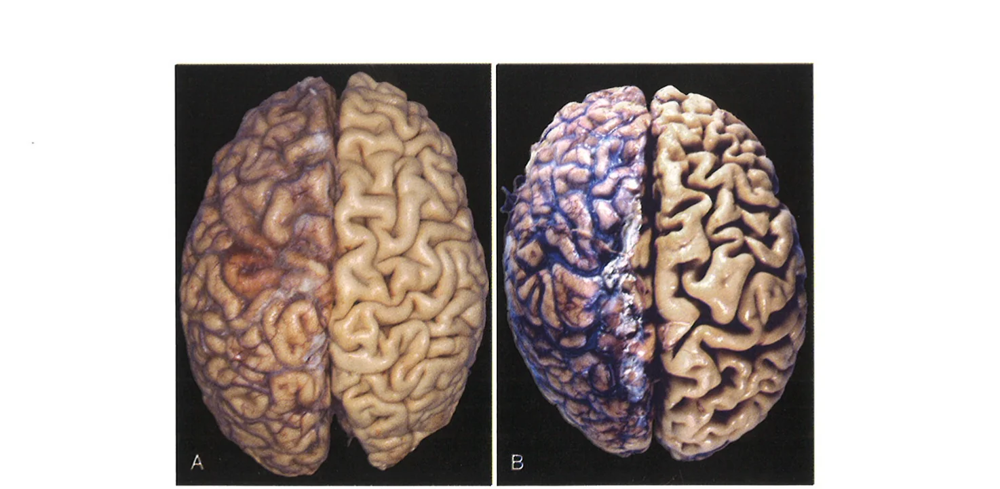
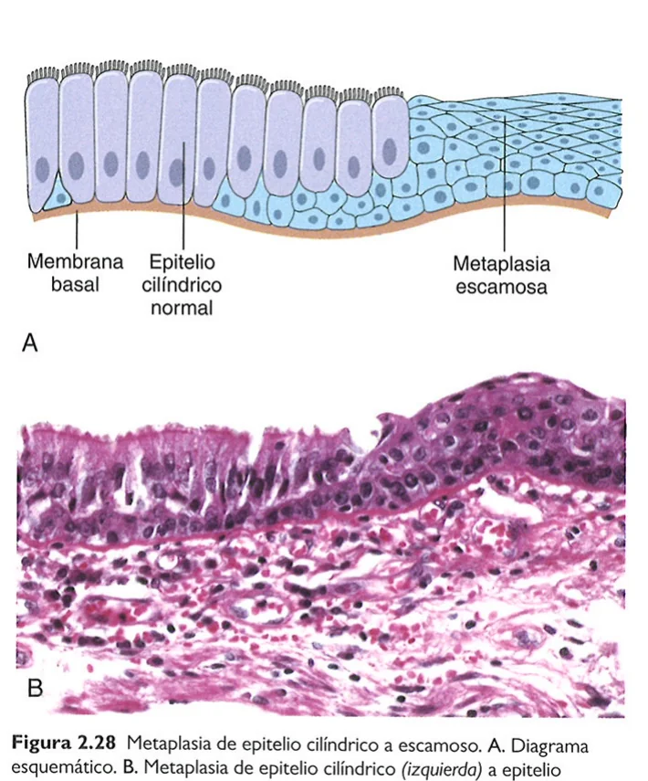
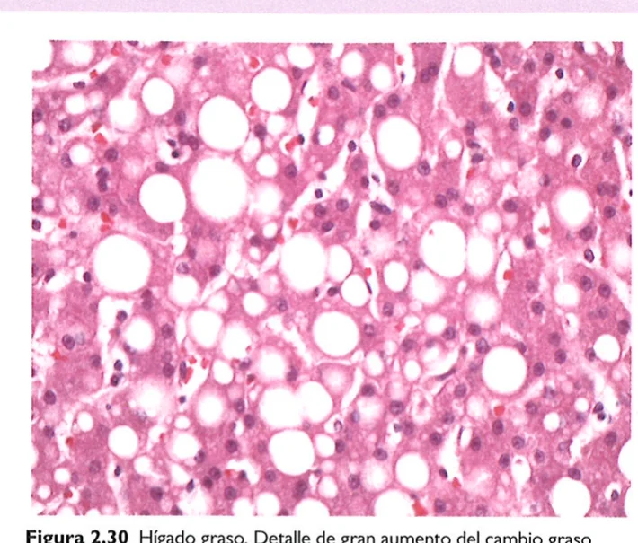
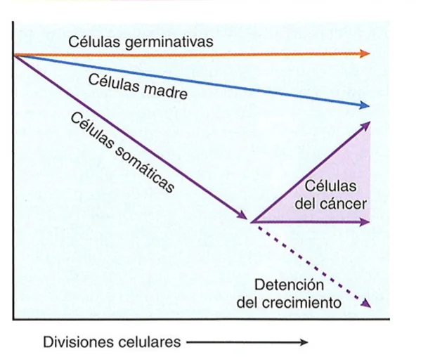

Robbins y Cotran, Patología Estructural y Funcional, 10ª edición (Scott A. Oakes).
Qué cubre esta guía
Este resumen del Certamen 1 se redactó antes de adoptar la cita por página; se publica sin reescribirlo. El Manual del Certamen 1 incluye el índice tema-clase-Robbins y las fuentes.
Lo esencial en 60 segundos
- Ante estrés la célula se adapta: hipertrofia (más tamaño), hiperplasia (más número), atrofia (menos tamaño) o metaplasia (cambio de fenotipo).
- Si el estrés supera la adaptación hay lesión reversible (tumefacción, cambio graso); si persiste, la célula muere por necrosis o apoptosis.
- Necrosis: rotura de membranas, escape del contenido, inflamación y digestión enzimática; apoptosis: caspasas, cuerpos apoptósicos, sin inflamación.
- Mecanismos de lesión: agotamiento de ATP, daño mitocondrial y de membranas, daño de ADN (p53), ERO, calcio citosólico y estrés del RE.
- La isquemia es la causa clínica más frecuente de lesión; daña más rápido que la hipoxia pura; la reperfusión puede agravarla.
- Acumulaciones intracelulares y calcificaciones: distrófica en tejido necrótico con calcio sérico normal; metastásica en tejido normal por hipercalcemia.
Ideas clave
- Ante un estrés, la célula se adapta: hipertrofia (aumenta el tamaño), hiperplasia (aumenta el número), atrofia (disminuye el tamaño) o metaplasia (cambia el fenotipo).
- Si el estrés supera los límites adaptativos aparece una lesión celular reversible; si el estímulo persiste, la lesión pasa el "punto de no retorno" y la célula muere por necrosis o apoptosis.
- La necrosis es una muerte "accidental": rotura de membranas, escape del contenido, inflamación local y digestión enzimática por leucocitos. La apoptosis es activada por programas (vías de señalización) mediados por caspasas: célula que se reduce de tamaño, condensación de la cromatina, cuerpos apoptósicos fagocitados, sin inflamación.
- Otras formas reguladas de muerte: necroptosis (independiente de caspasas; RIPK1-RIPK3-MLKL), piroptosis (caspasa 1, IL-1) y ferroptosis (peroxidación lipídica dependiente de hierro). La autofagia es, ante todo, un mecanismo adaptativo de supervivencia.
- Los mecanismos de lesión celular (con dianas intracelulares concretas) son el agotamiento de ATP, el daño mitocondrial, el daño de las membranas, el daño del ADN (vía p53), el estrés oxidativo (radicales libres/ERO), el aumento del calcio citosólico y el estrés del retículo endoplásmico (respuesta a las proteínas no plegadas).
- La isquemia (hipoxia por reducción del flujo sanguíneo) es la causa más frecuente de lesión celular en la medicina clínica; es más rápida y grave que la hipoxia pura porque priva del aporte de sustratos para la glucólisis; la reperfusión puede agravar la lesión (lesión por isquemia-reperfusión).
- Las acumulaciones intracelulares (lípidos, proteínas, glucógeno, pigmentos) y las calcificaciones patológicas (distrófica en tejido necrótico con calcio sérico normal; metastásica en tejido normal por hipercalcemia) son manifestaciones frecuentes de alteraciones metabólicas.
- El envejecimiento celular resulta de la acumulación de daño del ADN y moleculares, la senectud replicativa (acortamiento de telómeros), la homeostasis defectuosa de las proteínas y la desregulación de la detección de nutrientes (sirtuinas, señalización IGF-1).
Introducción a la anatomía patológica
La anatomía patológica es el estudio de los cambios estructurales, bioquímicos y funcionales en células, tejidos y órganos que subyacen a la enfermedad. Sirve de puente entre las ciencias básicas y la medicina clínica, y constituye la base científica de la medicina. Se divide en anatomía patológica general (reacciones comunes de células y tejidos ante los estímulos nocivos, no específicas de un tejido) y anatomía patológica sistémica (enfermedades de sistemas de órganos concretos).
Cuatro aspectos conforman el núcleo de la anatomía patológica:
- Etiología: la causa iniciadora. Factores genéticos (mutaciones hereditarias o adquiridas, variantes génicas polimórficas) y ambientales (infecciosas, nutricionales, químicas, físicas). La mayoría de las enfermedades frecuentes (ateroesclerosis, cáncer) son multifactoriales: varias agresiones ambientales sobre un individuo genéticamente susceptible.
- Patogenia: la secuencia de procesos moleculares, bioquímicos y celulares que conducen al desarrollo de la enfermedad; explica cómo las etiologías producen las manifestaciones morfológicas y clínicas. Su estudio es un elemento central de la anatomía patológica.
- Cambios morfológicos: las alteraciones estructurales características de la enfermedad (a simple vista o al microscopio óptico o electrónico).
- Manifestaciones clínicas: las consecuencias funcionales de los cambios morfológicos, que explican los signos y síntomas del paciente y orientan la asistencia clínica.
Revisión de las respuestas celulares al estrés
La célula reacciona a los estímulos fisiológicos y nocivos de varias formas. La respuesta adaptativa puede consistir en un aumento del tamaño y de la actividad (hipertrofia), un aumento del número de células (hiperplasia), una reducción del tamaño y la actividad metabólica (atrofia) o un cambio del fenotipo (metaplasia). Si se elimina el estrés, la célula puede recuperar su estado original sin sufrir consecuencias perniciosas; si se superan los límites de las respuestas adaptativas, o si las células se exponen a agresiones dañinas, son privadas de nutrientes esenciales o resultan alteradas por mutaciones, se produce una secuencia de procesos llamada lesión celular. La lesión celular es reversible hasta cierto punto, pero, si el estímulo lesional persiste o es intenso, la célula sufre una lesión irreversible y, finalmente, muere.
Ejemplo secuencial: ante un aumento de la carga hemodinámica, el músculo cardiaco se agranda (adaptación más vulnerable a la lesión por la mayor demanda metabólica); si el aporte de sangre es insuficiente, el músculo sufre primero una lesión reversible (cambios citoplásmicos) y, a menos que el flujo se restablezca rápidamente, las células sufren una lesión irreversible y mueren. La muerte celular es un proceso normal y esencial en la embriogénesis, el desarrollo de los órganos y la homeostasis del adulto; contrariamente, la muerte celular excesiva por lesión progresiva es uno de los procesos más cruciales en la evolución de cualquier enfermedad.


Causas de lesión celular
Las causas de lesión celular van desde el traumatismo mecánico hasta anomalías celulares sutiles. Las más importantes se agrupan así:
- Privación de oxígeno. La hipoxia (deficiencia de oxígeno) causa lesión al reducir la respiración oxidativa aerobia; es una causa importante y frecuente de lesión y muerte celular. Sus causas: flujo sanguíneo reducido (isquemia), oxigenación inadecuada de la sangre (insuficiencia respiratoria) y menor capacidad de transporte de O2 (anemia, intoxicación por monóxido de carbono, hemorragias graves). Según la intensidad del estado hipóxico, las células se adaptan (atrofia por el estrechamiento paulatino de una arteria), sufren lesión o mueren.
- Agentes físicos. Traumatismos mecánicos, temperaturas extremas (quemaduras y frío intenso), cambios bruscos de la presión atmosférica, radiación y shock eléctrico.
- Sustancias químicas, fármacos y drogas. Incluyen desde sustancias sencillas (glucosa o sal en soluciones hipertónicas, que alteran el equilibrio hidroelectrolítico) hasta venenos bien conocidos (arsénico, cianuro, mercurio), tóxicos ambientales; incluso el oxígeno es tóxico en concentraciones elevadas.
- Agentes infecciosos. Virus, rickettsias, bacterias, hongos y algunas formas superiores de parásitos; causan lesión de formas diversas.
- Reacciones inmunitarias. Respuestas nocivas ante autoantígenos endógenos (enfermedades autoinmunitarias) y ante agentes externos (virus, sustancias ambientales); causa importante de lesión celular y tisular.
- Anomalías genéticas. Aberraciones tan extremas como un cromosoma extra (síndrome de Down) o tan sutiles como la sustitución de un par de bases con cambio de aminoácido (anemia drepanocítica); pueden causar lesión por función proteica deficiente, por acumulación de ADN dañado o de proteínas mal plegadas; los polimorfismos de nucleótido único influyen en la susceptibilidad a las agresiones ambientales.
- Desequilibrios nutricionales. La deficiencia de proteínas y calorías sigue siendo una causa terrible de muerte en el mundo; la falta de vitaminas (escorbuto, beriberi, pelagra) también; a la inversa, el exceso de alimentación es una causa importante de lesión (la obesidad se asocia a mayor incidencia de diabetes y de cáncer); finalmente, la composición de la dieta (grasas y colesterol) predisponen a la ateroesclerosis, el mayor factor de riesgo de la enfermedad cardiovascular.
Progresión de la lesión y muerte celular
Todos los tipos de estrés actúan primero a nivel molecular o bioquímico. Existe un desfase entre el estrés y sus manifestaciones morfológicas: los cambios bioquímicos, histoquímicos y ultraestructurales aparecen de minutos a horas; los visibles en el microscopio óptico o a simple vista tardan más (de horas a días). Por ejemplo, en la isquemia del miocardio, la tumefacción celular (cambio reversible) aparece en minutos, constituyendo un indicador de daño mantenido que podría volverse irreversible en 1-2 h; sin embargo, los signos inequívocos de muerte celular al microscopio óptico pueden no observarse hasta 4-12 h del inicio de la isquemia.
Dentro de ciertos límites, la célula es capaz de reparar las alteraciones de la lesión reversible y, si desaparece el estímulo nocivo, recuperar su normalidad. Un daño persistente o excesivo hace que las células atraviesen el "punto de no retorno" (bastante impreciso) hacia la lesión irreversible y la muerte celular, principalmente por necrosis y/o apoptosis.
Lesión celular reversible
Alteraciones funcionales y estructurales iniciales o leves, corregibles si se elimina el estímulo. Dos características:
- Tumefacción celular: primera manifestación de casi todas las formas de lesión. Se debe a la entrada de agua por fracaso de la bomba Na+-K+-ATPasa (por déficit de oxígeno que interfiere con la fosforilación oxidativa mitocondrial, o por daño mitocondrial secundario a radiación o tóxicos). Microscopía: órgano pálido, con mayor turgencia y peso; pequeñas vacuolas citoplásmicas (segmentos distendidos del RE), patrón llamado cambio hidrópico o degeneración vacular.
- Cambio graso (esteatosis): aparición de vacuolas lipídicas con triglicéridos en células parenquimatosas de órganos implicados en el metabolismo de los lípidos (sobre todo el hígado), cuando un daño tóxico altera las vías metabólicas.
El citoplasma de las células lesionadas es rojo (eosinófilo) con la tinción H-E por la pérdida de ARN citoplásmico (que se une a la hematoxilina); la eosinofilia aumenta conforme la célula progresa hacia la necrosis. Cambios ultraestructurales de la lesión reversible: modificaciones de la membrana plasmática (formación de vesículas, pérdida de microvellosidades), compromiso mitocondrial (tumefacción y pequeñas densidades amorfas), figuras de mielina citosólicas, dilatación del RE (separación de polisomas) y alteración nuclear (desagregación de los elementos granulares y fibrilares).
Necrosis
La necrosis es el resultado de una lesión grave de la célula, acompañada de la rotura de las membranas celulares (membrana plasmática y membranas orgánulares) y de la salida del contenido celular al exterior, y con activación de una respuesta inflamatoria local. Implica desnaturalización de proteínas celulares, escape del contenido celular y digestión enzimática de la célula.
Morfología:
- Mayor eosinofilia en H-E (por pérdida del ARN citoplásmico y acumulación de proteínas citoplásmicas desnaturalizadas); el citoplasma puede tener una apariencia vítrea, homogénea (por pérdida del glucógeno) y, cuando las enzimas lisosómicas han digerido los orgánulos, queda vacuolado y parece "apolillado".
- Figuras de mielina: precipitados de fosfolípidos arremolinados que quedan en las células necróticas; se fagocitan por otras células o se degradan a ácidos grasos, cuya calcificación provoca depósitos abundantes de calcio.
- A la microscopía electrónica: soluciones de continuidad de la membrana plasmática y de las membranas de los orgánulos; dilatación mitocondrial marcada, con mayores densidades amorfas (calcio y proteínas); figuras de mielina y desechos amorfos.
- Cambios nucleares (todos por degradación del ADN): picnosis (cromatina condensada en una masa basófila contraída, con disminución del tamaño y aumento de la basofilia), cariorexis (fragmentación del núcleo picnótico) y cariólisis (disolución de la cromatina, con menor basofilia de la cromatina por pérdida de ADN). Al cabo de 1-2 días el núcleo desaparece por completo.
- Desaparición final: las células necróticas son retiradas por la digestión enzimática y la fagocitosis leucocitarias; si no se reabsorben rápidamente, constituyen un núcleo para el depósito de sales de calcio (calcificación distrófica).
Patrones de necrosis tisular
| Patrón | Características | Causas y ejemplos |
|---|---|---|
| Coagulativa | La arquitectura del tejido muerto se conserva durante algunos días; presumiblemente la lesión desnaturaliza no solo las proteínas estructurales sino también las enzimas, y de esta forma bloquea la proteólisis de las células muertas; células intensamente eosinófilas con núcleos mal definidos o rojizos; al final las células necróticas son degradadas por enzimas lisosómicas de los leucocitos infiltrantes (fagocitosis) | Isquemia (infarto) en todos los órganos, excepto el encéfalo (v. licuefactiva) |
| Licuefactiva | A diferencia de la coagulativa, se caracteriza por la digestión de las células muertas y la transformación del tejido en un líquido viscoso; el material es a menudo de color amarillo cremoso por la presencia de leucocitos (pus) | Infecciones bacterianas focales (y fúngicas); muerte de células del sistema nervioso central (p. ej., infarto cerebral) |
| Gangrenosa | No es un patrón específico de muerte celular, sino un término clínico; se aplica por lo general a una extremidad (habitualmente la pierna) que se ha quedado sin vascularización y ha sufrido necrosis (normalmente coagulativa) en varios planos tisulares; si se superpone una infección bacteriana, se añade más necrosis licuefactiva (gangrena húmeda) | Isquemia de una extremidad, con o sin sobreinfección bacteriana |
| Caseosa | Área de necrosis friable y blanquecina amarillenta ("similar al queso"); a histología, una colección no estructurada de células fragmentadas o lisadas y delimitada por un margen inflamatorio bien definido (la imagen histológica característica del granuloma) | Infección tuberculosa |
| Grasa | Áreas focales de destrucción grasa, con saponificación (formación de jabones de calcio) en las zonas de degradación de los lípidos del mesentio; a histología, contornos borrosos de las células grasas necróticas, depósitos basófilos de calcio y una reacción inflamatoria | Liberación de lipasas pancreáticas activadas en el interior del páncreas y de la cavidad peritoneal (pancreatitis) |
| Fibrinoide | Tipo especial de daño vascular: depósito en las paredes arteriales de complejos antígeno-anticuerpo (inmunocomplejos), junto con proteínas plasmáticas que han salido de los vasos; imagen rosa brillante y amorfa ("similar a la fibrina") en H-E | Reacciones inmunitarias que afectan a los vasos (síndromes de vasculitis de mecanismo inmunitario) |
Apoptosis
La apoptosis es una muerte celular inducida por un programa de suicidio estrictamente regulado, en el que la célula destinada a morir activa enzimas intrínsecas que degradan su ADN genómico y sus proteínas nucleares y citoplásmicas. Es una muerte "regulada" (controlada genéticamente) mediada por vías moleculares definidas, que mata con precisión, sin inflamación ni daño colateral. La distinción con la necrosis no siempre es absoluta: algunos tipos de necrosis están controlados genéticamente por una vía molecular definida (necroptosis), y en algunas situaciones la muerte celular muestra características de ambas o progresa de una a otra; aun así, sus mecanismos, características morfológicas y consecuencias funcionales suelen ser distintos.


Causas de la apoptosis
Situaciones fisiológicas (los humanos recambian casi un millón de células por segundo; la apoptosis ocurre porque se priva a las células de las señales de supervivencia necesarias, como factores de crecimiento e interacciones con la matriz extracelular, o porque reciben señales proapoptósicas):
- Retirada de células supernumerarias durante el desarrollo (involución de estructuras primordiales y remodelación de tejidos en maduración). "Muerte celular programada" se refiere tan solo a la apoptosis durante el desarrollo.
- Involución de tejidos dependientes de hormonas al desaparecer éstas: degeneración endometrial en el ciclo menstrual, atresia de folículos ováricos, regresión de la mama lactante tras el destete.
- Recambio celular en poblaciones proliferantes (linfocitos inmaduros de médula ósea y timo, linfocitos B de centros germinales sin receptores útiles, células epiteliales de las criptas intestinales), para mantener un número constante de células (homeostasis).
- Eliminación de linfocitos autorreactivos peligrosos (evita reacciones contra el tejido propio).
- Muerte de células del huésped que ya cumplieron su función (neutrófilos de una inflamación aguda; linfocitos al final de una respuesta inmunitaria).
Condiciones patológicas (elimina células lesionadas sin posibilidad de reparación, sin incitar una reacción del huésped; limita el daño colateral en el tejido):
- Daño del ADN: la radiación y los fármacos antineoplásicos citotóxicos dañan el ADN; si los mecanismos de reparación no lo corrigen, la célula desencadena apoptosis y muere, evitando la supervivencia de células con mutaciones que podrían transformarse malignamente.
- Acumulación de proteínas mal plegadas (estrés del RE).
- Infecciones, especialmente víricas: por el propio virus (p. ej., adenovirus y VIH) o por la respuesta del huésped (hepatitis vírica). Una respuesta importante frente a los virus depende de los CTL específicos frente a las proteínas víricas, que inducen la apoptosis de las células infectadas para eliminar los reservorios de infección, aunque esto puede provocar daño tisular importante. El mismo mecanismo mediado por CTL es responsable de la destrucción de células tumorales, del rechazo celular de los trasplantes y del daño tisular en la enfermedad del injerto contra el huésped.
- Atrofia patológica de los órganos parenquimatosos tras la obstrucción de conductos (p. ej., páncreas, glándula parótida y riñón).
Morfología de la apoptosis
- Reducción del tamaño celular: citoplasma denso y eosinófilo; los orgánulos, aunque relativamente normales, se agregan. Esto contrasta con la necrosis, en la que la característica inicial es la tumefacción, no la reducción del tamaño celular.
- Condensación de la cromatina (la característica más distintiva): la cromatina se agrega periféricamente, bajo la membrana nuclear, en masas densas de varias formas y tamaños.
- Vesículas citoplásmicas y cuerpos apoptósicos: formación de vesículas por toda la membrana, y posterior fragmentación de la célula en cuerpos apoptósicos rodeados por membrana, compuestos por citoplasma y orgánulos densamente empaquetados, con o sin fragmentos de núcleo.
- Fagocitosis de las células apoptósicas o de sus cuerpos, por macrófagos y otras células vecinas. En H-E, la célula apoptósica es una masa redonda u ovalada de citoplasma intensamente eosinófilo con núcleos condensados en fragmentos de cromatina. Todo ocurre muy rápido y sin inflamación, lo que dificulta la detección de la apoptosis en los cortes histológicos.
Mecanismos de la apoptosis
La apoptosis se produce por la activación de unas enzimas llamadas caspasas, proteasas que contienen cisteína en su lugar activo y escinden las proteínas en los residuos de ácido aspártico; las caspasas están presentes como proenzimas inactivas, y su activación se produce por escisión enzimática. La presencia de caspasas activas es un marcador de células en apoptosis. El proceso se divide en una fase de iniciación (algunas caspasas se activan catalíticamente y desatan la cascada de otras caspasas) y una fase de ejecución (las caspasas terminales activan la fragmentación celular). Dos vías distintas convergen en la activación de las caspasas: la vía mitocondrial y la vía del receptor de muerte; aunque se cruzan, por lo general se inducen en circunstancias diferentes, implican moléculas iniciadoras distintas y cumplen funciones diferentes.


Vía mitocondrial (intrínseca): responsable de la apoptosis en la mayoría de las situaciones fisiológicas y patológicas. Consiste en el aumento de la permeabilidad de la membrana mitocondrial externa, con la liberación al citoplasma de moléculas proapoptóticas (como el citocromo c) del espacio intermembrana mitocondrial. La permeabilidad está regulada estrictamente por la familia BCL2 (más de 20 miembros, llamados así porque el gen BCL2 se sobreexpresa a menudo en ciertos linfomas B):
- Miembros antiapoptósicos: BCL2, BCL-XL, MCL1 (contienen cuatro dominios BH, BH1-4); están en la membrana externa mitocondrial (también en el citosol y las membranas del RE) y mantienen impermeable la membrana externa, impidiendo la fuga de citocromo c y otras proteínas inductoras de muerte al citosol.
- Miembros proapoptóticos (efectores): BAX y BAK (contienen los tres primeros dominios BH, BH1-3); al activarse se oligomerizan y se insertan en la membrana externa mitocondrial activos, aumentando su permeabilidad (se sugiere que forman canales por los que el citocromo c escapa del espacio intermembrana).
- Iniciadores de apoptosis regulada (proteínas "solo BH3"): BAD, BIM, BID, Puma y Noxa; solo contienen el dominio BH3; su actividad está modulada por los sensores de estrés y de daño celular, y cuando se regulan al alza y se activan, pueden inducir la apoptosis (activando directamente a los ejecutores BAX/BAK, y antagonizando también las proteínas antiapoptóticas).
Los factores de crecimiento y las señales de supervivencia inducen la producción de proteínas antiapoptósicas (p. ej., BCL2) y protegen a la célula de la apoptosis. La pérdida de señales de supervivencia, el daño del ADN y otras agresiones activan sensores que, por su parte, activan las proteínas solo BH3; el resultado neto es la activación de BAX/BAK, la fuga del citocromo c, y la apoptosis. Una vez liberado en el citosol, el citocromo c se une a una proteína denominada APAF-1 (factor 1 activador de la apoptosis), y se forma una estructura multimérica llamada apoptosoma; este complejo se une a la caspasa 9, la caspasa iniciadora esencial de la vía mitocondrial, y favorece su autodesdoblamiento, generando formas catalíticamente activas que inician la cascada de caspasas ejecutoras (p. ej., caspasa 3). Otras proteínas mitocondriales (p. ej., Smac/DIABLO) se unen a proteínas citoplasmáticas que funcionan como inhibidores fisiológicos de la apoptosis (IAP) y los neutralizan, permitiendo la iniciación de la caspasa.
Vía extrínseca (iniciada por el receptor de muerte): la ocupación de receptores de muerte de la familia del receptor del factor de necrosis tumoral, que contienen un dominio citoplásmico implicado en interacciones entre proteínas (el dominio de muerte, esencial para hacer llegar señales apoptósicas). Los receptores de muerte mejor estudiados son TNFR1 (receptor del factor de necrosis tumoral de tipo 1) y Fas (CD95). El ligando que se une a Fas es el ligando de Fas (FasL), expresado en linfocitos T que reconocen autoantígenos (y sirven para eliminar linfocitos autorreactivos que también expresan Fas) y en CTL que destruyen células infectadas por virus y tumorales. Cuando el FasL se une a Fas, se agrupan tres o más moléculas de Fas, y sus dominios de muerte forman un sitio de enlace para una proteína adaptadora llamada FADD (dominio de muerte asociado a Fas); fijada al complejo, la FADD se une a la caspasa 8 inactiva (o caspasa 10), agrupa múltiples moléculas de caspasa y provoca su autoactivación por escisión, generando caspasa 8 activa. La caspasa 8 activa inicia luego la secuencia de caspasas ejecutoras, como en la vía mitocondrial. La vía está inhibida por una proteína llamada FLIP, que se une a la procaspasa 8 y bloquea su unión a la FADD sin activarla; algunos virus y células normales producen FLIP como mecanismo para protegerse de la apoptosis mediada por Fas (p. ej., hepatitis víricas).
Ambas vías están interconectadas: en los hepatocitos y las células beta del páncreas, la caspasa 8 activada por la interacción Fas-FasL escinde y activa la proteína solo BH3 BID, que activa la vía mitocondrial; la activación combinada de ambas vías da un golpe fatal a la célula.
Fase de ejecución: las caspasas iniciadoras activas de la vía mitocondrial (caspasa 9) o de la vía extrínseca (caspasas 8 y 10) activan caspasas ejecutoras que actúan sobre muchos componentes celulares. Por ejemplo, las caspasas activas escinden un inhibidor de una ADNasa, haciéndola activa y permitiendo la degradación del ADN; también inducen la proteólisis de elementos de la matriz nuclear, lo que promueve la fragmentación del núcleo. Otros pasos (la formación de las vesículas de membrana y de los cuerpos apoptósicos) no están bien definidos.
Eliminación de las células muertas (eferocitosis): la formación de cuerpos apoptósicos descompone las células en fragmentos fagocitables; las células apoptósicas y sus fragmentos sufren cambios en sus membranas que promueven activamente su fagocitosis. En las células sanas, la fosfatidilserina está en la hoja interna de la membrana plasmática; en las células apoptóticas, este fosfolípido "se voltea" y se expresa en la superficie externa, donde es reconocido por varios receptores de los macrófagos. Además, las células apoptóticas secretan factores solubles que reclutan fagocitos, y por su parte los macrófagos producen proteínas que se unen a las células apoptóticas (no así a las vivas) y favorecen su ingesta. Asimismo, los cuerpos apoptóticos pueden quedar recubiertos por anticuerpos naturales y por proteínas del sistema de complemento (especialmente C1q), que son reconocidas por los fagocitos. La fagocitosis es tan eficiente que las células muertas desaparecen rápido, a menudo en minutos, sin dejar rastro; además, cuando han ingerido células apoptósicas, los macrófagos producen menos citocinas inflamatorias. Todo ello limita la reacción inflamatoria (incluso en apoptosis extensa).
Necrosis vs apoptosis
| Característica | Necrosis | Apoptosis |
|---|---|---|
| Tamaño celular | Aumentado (tumefacción) | Reducido (encogimiento) |
| Núcleo | Picnosis, cariorexis, cariólisis; desaparece en 1-2 días | Condensación periférica de la cromatina, fragmentación |
| Membrana plasmática | Rota | Intacta, con orientación alterada de los lípidos (fosfatidilserina externa) |
| Contenido celular | Digestión enzimática; puede escapar | Intacto, en cuerpos apoptósicos |
| Inflamación | Frecuente | No |
| Papel | Habitualmente patológica (culmina una lesión irreversible) | A menudo fisiológica (elimina células indeseables); también patológica tras ciertas lesiones (especialmente del ADN) |
Otros mecanismos de muerte celular
Además de la necrosis y de la apoptosis, se han descrito otras formas de muerte celular; su papel en las enfermedades humanas sigue siendo tema de investigación, pero los estudiantes deberían conocer sus nombres y características exclusivas:
- Necroptosis: tipo de muerte celular "híbrido" que comparte aspectos de la necrosis y de la apoptosis. Morfológicamente, y en parte bioquímicamente, se parece a la necrosis (pérdida de ATP, tumefacción de la célula y de los orgánulos, generación de ERO, liberación de enzimas lisosómicas y, por último, rotura de la membrana plasmática), pero se desencadena por vías de transducción de señales, como la apoptosis. Por este motivo, la necroptosis se llama a veces "necrosis programada". Diferencia capital con la apoptosis: no se activan las caspasas, por lo que la necroptosis es una muerte celular programada independiente de las caspasas. Se inicia de modo similar a la forma extrínseca de la apoptosis: la unión del TNF a TNFR1 es el modelo más estudiado, pero la unión de Fas y los sensores de ADN y de ARN vírico (aún no identificados) también la desencadenan. La unión de TNFR1 recruta las cinasas RIPK1 y RIPK3 a un complejo multiproteínico, y la RIPK3 fosforila una proteína citoplásmica llamada MLKL; en respuesta a esta fosforilación, los monómeros de MLKL se reúnen en oligómeros, pasan del citosol a la membrana plasmática y provocan la rotura de esta membrana (que libera el contenido celular, induce una reacción inflamatoria y explica el parecido morfológico con la necrosis). La necroptosis es una vía de muerte importante en condiciones fisiológicas (p. ej., en la formación de la placa de crecimiento en mamíferos) y en estados patológicos (esteatohepatitis, pancreatitis aguda, lesión por isquemia-reperfusión, enfermedades neurodegenerativas como la de Parkinson); también sirve de mecanismo de reserva en la defensa del huésped frente a ciertos virus que codifican inhibidores de las caspasas (p. ej., citomegalovirus).
- Piroptosis: forma de apoptosis acompañada de liberación de la citocina IL-1, inductora de fiebre ("piro" = fiebre). Los productos microbianos que entran en las células infectadas son reconocidos por receptores citoplásmicos de la inmunidad innata, que activan el complejo multiproteínico llamado inflamasoma; su función es activar la caspasa 1 (también denominada enzima convertora de IL-1[β]), que escinde el precursor de la interleucina 1 y libera la forma biológicamente activa de IL-1, mediadora de muchos aspectos de la inflamación (reclutamiento de leucocitos, fiebre). La caspasa 1, junto con las caspasas 4 y 5 estrechamente relacionadas, induce también la muerte de la célula infectada. A diferencia de la apoptosis clásica, esta vía se caracteriza por la liberación de mediadores inflamatorios: se cree que es el mecanismo por el que algunos microorganismos causan la muerte de las células infectadas y desencadenan, al mismo tiempo, inflamación local.
- Ferroptosis: descubierta en 2012; vía de muerte celular distinta que se activa cuando cantidades intracelulares excesivas de hierro o de ERO superan las defensas antioxidantes dependientes del glutatión, causando peroxidación sin control de los lípidos de la membrana. La peroxidación generalizada de los lípidos altera la fluidez, las interacciones lípido-proteína, el transporte de iones y nutrientes y las vías de señalización; el efecto global es la pérdida de permeabilidad de la membrana plasmática, que finalmente desemboca en una muerte celular parecida a la necrosis; no obstante, el proceso está regulado por señales específicas (a diferencia de la necrosis) y puede prevenirse reduciendo las cantidades de hierro (de ahí su nombre). En la ultraestructura destacan la pérdida de las crestas mitocondriales y la rotura de la membrana mitocondrial externa. Aunque su papel en la fisiología normal es controvertido, se ha relacionado con la muerte celular en el cáncer, las enfermedades neurodegenerativas y el accidente cerebrovascular.
Autofagia
La autofagia (del griego: "auto", uno mismo; "fagia", comer) es el proceso por el cual la célula devora su propio contenido: el transporte de materiales citoplásmicos a los lisosomas para su degradación. Es un mecanismo de supervivencia evolutivamente conservado: ante privación de nutrientes, las células hambrientas sobreviven transformándose en "caníbales de sí mismas" y reciclando los contenidos digeridos. Está implicada en muchos estados fisiológicos (envejecimiento, ejercicio) y procesos patológicos.
Pasos de la autofagia (fig. 2.17):
- Nucleación y formación de una membrana de aislamiento (también llamada fagóforo); se cree que proviene del RE, aunque otras fuentes de membrana (plasmática, mitocondrial) podrían contribuir.
- Formación del autofagosoma: la membrana de aislamiento se alarga, rodea y captura su carga (orgánulos citoplásmicos y estructuras citosólicas), y se cierra para formar el autofagosoma, una vesícula de doble membrana.
- Maduración: el autofagosoma se fusiona con los lisosomas (autofagolisosoma); las enzimas digestivas degradan su contenido; en el último paso se liberan los materiales digeridos para reciclar los metabolitos.
La formación del autofagosoma está regulada por más de una docena de genes relacionados con la autofagia (ATG). La privación de nutrientes o el agotamiento de factores de crecimiento activan un complejo de iniciación de cuatro proteínas que favorece el reclutamiento jerárquico de los productos de los genes Atg, para formar el núcleo de la membrana de iniciación. Esta membrana se alarga, rodea y captura su carga citosólica, y se cierra; el alargamiento y cierre de la membrana dependen de la acción coordinada de dos sistemas de conjugación similares a la ubiquitina, que condicionan el enlace covalente del lípido fosfatidiletanolamina (PE) con la cadena ligera 3 (LC3); la LC3 unida a lípidos está aumentada en la autofagia y sirve de marcador útil para identificar células en las que el proceso se está desarrollando. La introducción de la carga en el autofagosoma es selectiva, y una de las funciones de la LC3 unida a lípidos es marcar agregados de proteínas y orgánulos improductivos.
La autofagia es un mecanismo de supervivencia: manteniendo la integridad de las células ante el estrés al reciclar metabolitos esenciales y eliminar desechos intracelulares; por eso es prominente en células atróficas expuestas a privación grave de nutrientes. También participa en el recambio de orgánulos (RE, mitocondrias, lisosomas) y en la eliminación de agregados intracelulares que se acumulan en el envejecimiento, el estrés y varios estados patológicos. La autofagia puede desencadenar la muerte celular si es insuficiente para afrontar el estrés; esta vía de muerte es diferente de la necrosis y la apoptosis, y el mecanismo es desconocido (no está claro si la muerte celular es causada por la autofagia o por el estrés que desencadenó la autofagia; no obstante, la vacuolización autofágica a menudo precede o acompaña a la muerte celular).
Autofagia y enfermedades humanas:
- Cáncer: la autofagia puede fomentar el crecimiento del tumor y, a la vez, actuar como defensa frente a él (área de investigación activa).
- Trastornos neurodegenerativos: la desregulación de la autofagia está asociada a muchos trastornos; en la enfermedad de Alzheimer la maduración del autofagosoma está alterada (en modelos de ratón, los defectos genéticos de la autofagia aceleran la neurodegeneración); en la enfermedad de Huntington, la huntingtina mutada altera la autofagia.
- Enfermedades infecciosas: muchos patógenos son degradados mediante autofagia (p. ej., micobacterias, Shigella y VHS-1), y este mecanismo permite digerir las proteínas microbianas y llevarlas a las vías de presentación de antígenos; la deleción de Atg5 específica de macrófagos aumenta la susceptibilidad a la tuberculosis.
- Enfermedad inflamatoria intestinal: los estudios pangenómicos han relacionado la enfermedad de Crohn y la colitis ulcerosa con SNP en el gen autofágico ATG16L1 (cómo estos polimorfismos promueven la inflamación intestinal se desconoce).
Mecanismos de la lesión celular
Principios generales: la respuesta celular depende de la naturaleza de la lesión (duración, gravedad), del tipo, estado y capacidad de adaptación de la célula dañada (el estado nutricional y hormonal, las demandas metabólicas y las funciones de la célula; los polimorfismos genéticos, como los enzimas hepáticos que metabolizan el CCl4, condicionan la respuesta individual) y de la capacidad de la célula de reponerse (p. ej., la fibra de músculo esquelético de la pierna entra en reposo ante el riego de una arteria, mientras que el miocito no puede evitarlo). Además, un mismo estímulo nocivo puede activar simultáneamente varios mecanismos interconectados que lesionan las células; por eso es difícil atribuir una lesión concreta a una sola alteración bioquímica. Las dianas principales de los estímulos nocivos son las mitocondrias, las membranas celulares, la maquinaria de síntesis y secreción de proteínas y el ADN.


Daño mitocondrial y agotamiento de ATP
Las mitocondrias son esenciales en todas las vías que conducen a la lesión y muerte celular: aportan la energía (ATP) para la vida, pero también son dianas de muchos estímulos nocivos (aumento del Ca2+ citosólico, ERO, privación de oxígeno; son sensibles a casi todo tipo de agresión, incluidos hipoxia y tóxicos); además, las mutaciones de los genes mitocondriales son causa de algunas enfermedades hereditarias. Consecuencias del daño mitocondrial:
- Agotamiento de ATP: el ATP se produce por dos vías: la fosforilación oxidativa del ADP en la mitocondria (la principal en células de mamíferos, especialmente las que no se dividen, como las del hígado y el encéfalo) y la vía glucolítica, que genera ATP sin oxígeno, aunque en cantidades muchísimo menores, a partir de la glucosa de los líquidos corporales o de la hidrólisis del glucógeno. Además del daño mitocondrial, causan agotamiento de ATP la reducción del aporte sanguíneo y de nutrientes (isquemia e hipoxia) y las acciones de algunos tóxicos (p. ej., cianuro). El daño mitocondrial provoca con frecuencia la formación de un canal de alta conductancia, el poro de transición de la permeabilidad mitocondrial, cuya apertura determina la pérdida del potencial de membrana mitocondrial, con el consiguiente fracaso de la fosforilación oxidativa y el agotamiento progresivo del ATP que culmina en necrosis. Con la reducción del ATP al 5-10% de las cantidades normales:
- Fracasa la bomba de sodio de la membrana (Na+-K+-ATPasa): entra sodio, disminuye el potasio; la ganancia neta de solutos arrastra agua por ósmosis (tumefacción celular y dilatación del RE).
- El metabolismo energético se altera: si se reduce el aporte de oxígeno, la fosforilación oxidativa se detiene (menos ATP y más AMP), lo que estimula la glucogenólisis (por la fosforilasa) y la glucólisis (por la fosfofructocinasa) para intentar mantener el aporte energético; el depósito de glucógeno se agota rápidamente. La glucólisis anaerobia hace que se acumulen ácido láctico y fosfatos inorgánicos (por hidrólisis de ésteres de fosfato), lo que reduce el pH intracelular y la actividad de muchas enzimas citosólicas.
- Con la reducción prolongada o más intensa de ATP se altera el aparato de síntesis de proteínas: se separan los ribosomas del RE rugoso y se disocian los polisomas, con reducción de la síntesis proteica y aumento de las proteínas mal plegadas.
- Finalmente ocurre un daño irreversible de las membranas mitocondriales y lisosómicas, y la célula sufre necrosis.
- La fosforilación oxidativa incompleta también genera ERO.
- Fuga de proteínas proapoptósicas (como el citocromo c): el paso inicial de la apoptosis por la vía intrínseca, mediado por la formación de canales inducidos por BAX y BAK proapoptósicos (específicos de las membranas mitocondriales; el daño a otros orgánulos es solo indirecto).
Daño de la membrana
La pérdida temprana de la permeabilidad selectiva de las membranas (y, al final, el daño aparente de la membrana) es constante en la mayoría de los tipos de lesión celular (excepto la apoptosis). Puede afectar a su integridad y a sus funciones. En las células isquémicas, los defectos de membrana resultan del agotamiento de ATP y de la activación de fosfolipasas mediada por calcio; la membrana plasmática también sufre daño directo por toxinas bacterianas, proteínas víricas, complemento lítico y agentes físicos y químicos. Mecanismos bioquímicos del daño de membrana:
- ERO: los radicales libres de oxígeno lesionan las membranas mediante peroxidación de lípidos.
- Reducción de la síntesis de fosfolípidos: el funcionamiento mitocondrial defectuoso o la hipoxia reducen la producción de ATP y, con ello, las vías biosintéticas dependientes de energía; la disminución puede afectar a todas las membranas, incluidas las mitocondriales.
- Aumento de la degradación de los fosfolípidos de membrana: probablemente por la activación de las fosfoldipasas dependientes del calcio (Ca2+ citosólico y mitocondrial aumentados). La degradación genera productos con efecto detergente (ácidos grasos libres no esterificados, acilcarnitina y lisofosfolípidos); estos se pueden insertar en la bicapa lipídica o intercambiarse con los fosfolípidos de la membrana, modificando su permeabilidad y electrofisiología.
- Anomalías del citoesqueleto: los filamentos del citoesqueleto sirven de anclaje entre la membrana plasmática y el interior de la célula; las proteasas activadas por el Ca2+ citosólico dañan estos anclajes y, cuando esta situación se agrava por la tumefacción celular (especialmente en las células del miocardio), la membrana puede separarse del citoesqueleto y la célula se hace susceptible a la distensión y la rotura.
El daño de las varias membranas tiene distintos efectos: el daño mitocondrial abre el poro de transición de permeabilidad (menor generación de ATP y liberación de proteínas proapoptósicas); el daño de la membrana plasmática reduce el equilibrio osmótico y produce entrada de líquidos e iones y escape del contenido celular (incluidos metabolitos cruciales, como los intermediarios de la glucólisis, que reducen aún más el ATP); el daño de las membranas lisosómicas libera al citoplasma enzimas (ARNasas, ADNasas, proteasas, fosfatasas y glucosidasas que degradan ARN, ADN, proteínas, fosfoproteinas y glucógeno, respectivamente) que, en el pH ácido intracelular de la célula dañada, "digieren" la célula y empujan a la necrosis.
Daño del ADN
El daño del ADN nuclear (radiación, fármacos quimioterápicos antineoplásicos, ERO, o espontáneo como parte del envejecimiento, en gran medida por desaminación de los residuos de citosina a uracilo) activa sensores que desencadenan vías dependientes de p53: la p53 detiene a las células en la fase G1 del ciclo celular y activa los mecanismos de reparación del ADN; si éstos no consiguen corregir el daño, la p53 induce apoptosis por la vía mitocondrial. De este modo, la célula "elige" morir antes que sobrevivir con un ADN anómalo que podría provocar transformación maligna. Como cabría esperar, las mutaciones de p53 que interfieren con su capacidad de detener el ciclo o inducir apoptosis se asocian a numerosos cánceres.
Estrés oxidativo
Los radicales libres son sustancias químicas con un único electrón no emparejado en un orbital externo; estos electrones son muy reactivos, y "atacan" y modifican moléculas adyacentes (proteínas, lípidos, hidratos de carbono, ácidos nucleicos); algunas de las reacciones son autocatalíticas: las moléculas que reaccionan con radicales libres se convierten ellas mismas en radicales, propagando la cadena lesiva. Las especies reactivas del oxígeno (ERO) son un tipo de radical libre derivado del oxígeno cuya implicación en la lesión celular está bien establecida; se producen normalmente durante la respiración mitocondrial y la producción de energía, pero se degradan y eliminan por los depuradores de ERO intracelulares. Cuando la mayor producción o la menor depuración conduce a un exceso de radicales libres, se produce estrés oxidativo; se ha implicado en lesίοন celular, cáncer, envejecimiento y algunas enfermedades degenerativas (p. ej., Alzheimer). Las ERO también se producen en grandes cantidades en los leucocitos activados (neutrófilos y macrófagos) para destruir microorganismos y eliminar células muertas.
Generación de radicales libres:
- Reacciones de reducción-oxidación de procesos metabólicos normales: la reducción incompleta del O2 en la respiración genera pequeñas cantidades de intermediarios parcialmente reducidos: anión superóxido (O2-) (un electrón), peróxido de hidrógeno (H2O2) (dos electrones) y radical hidroxilo (·OH) (tres electrones), catalizadas por enzimas oxidativas del RE, citosol, mitocondrias, peroxisomas y lisosomas.
- Absorción de energía radiante (luz ultravioleta, rayos X): la radiación ionizante hidróliza el agua en radicales libres ·OH e hidrógeno (H·).
- Aumentos bruscos y rápidos de ERO en los leucocitos activados durante la inflamación: se producen mediante un complejo multiproteínico de la membrana plasmática que usa la NADPH oxidasa; además, algunas oxidasas intracelulares (p. ej., xantina oxidasa) generan superóxido; los defectos de la producción de superóxido por los leucocitos causan la enfermedad granulomatosa crónica.
- Metabolismo enzimático de sustancias químicas exógenas o de fármacos: radicales libres que no son ERO pero tienen efectos similares (p. ej., el CCl4 genera el radical CCl3·).
- Metales de transición (hierro, cobre): donan o aceptan electrones libres en las reacciones intracelulares y catalizan la formación de radicales libres, como en la reacción de Fenton (H2O2 + Fe2+ → Fe3+ + OH- + ·OH); como gran parte del hierro libre intracelular está en estado férrico (Fe3+), debe ser reducido a estado ferroso (Fe2+) para participar en la reacción de Fenton; esta reducción se potencia con el O2, de modo que hierro y O2 pueden cooperar en el daño oxidativo.
- Óxido nítrico (NO): un mediador químico generado por células endoteliales, macrófagos, neuronas y otros tipos; actúa como radical libre y puede ser convertido en el anión peroxinitrito (ONOO-), altamente reactivo, así como en NO y NO3-.
Eliminación de radicales libres:
- Descomposición espontánea (los radicales son intrínsecamente inestables; p. ej., el O2- se dismuta espontáneamente en O2 y H2O2 en presencia de agua).
- Antioxidantes: bloquean la formación o inactivan los radicales libres; ejemplos: vitaminas liposolubles E y A, ácido ascórbico y glutatión en el citosol.
- Secuestro del hierro y del cobre libres por proteínas de depósito y transporte (transferrina, ferritina, lactoferrina y ceruloplasmina), que impide su participación en reacciones generadoras de ERO.
- Enzimas antioxidantes: catalasa (en los peroxisomas; descompone el H2O2); superóxido dismutasas (SOD) (presentes en múltiples tipos celulares; convierten O2- en H2O2; incluyen la SOD-manganeso (mitocondrial) y la SOD-cobre-cinc (citoplásmica)) y la glutatión peroxidasa (protege catalizando la degradación de radicales libres: H2O2 + 2 GSH → GSSG [homodímero de glutatión oxidado] + 2 H2O, o 2 ·OH + 2 GSH → GSSG + 2 H2O); la proporción intracelular de glutatión oxidado (GSSG) respecto al reducido (GSH) refleja el estado oxidativo de la célula y su capacidad de desintoxicar las ERO.
Efectos patológicos de los radicales libres:
- Peroxidación de lípidos en las membranas: el daño oxidativo se inicia cuando los dobles enlaces de los ácidos grasos insaturados de los lípidos de membrana son atacados por radicales libres derivados del O2 (especialmente el ·OH); las interacciones entre los lípidos y los radicales producen peróxidos inestables y reactivos, con reacción en cadena autocatalítica ("propagación") que daña extensamente las membranas.
- Modificación oxidativa de proteínas: oxidación de las cadenas laterales de los aminoácidos (con enlaces cruzados disulfuro), oxidación del esqueleto peptídico; daña los lugares activos de enzimas y altera la conformación de las proteínas estructurales (y aumenta su degradación proteosómica).
- Lesión del ADN: roturas de cadena simple y doble, enlaces cruzados entre cadenas y formación de aductos. El daño oxidativo del ADN se implica en el envejecimiento celular y la transformación maligna.
Los radicales libres se pensaban clásicamente como causas de necrosis; hoy está claro que también pueden desencadenar apoptosis y que, en dosis y circunstancias controladas, tienen funciones fisiológicas de señalización.
Alteración de la homeostasis del calcio
El Ca2+ libre citosólico se mantiene muy bajo (0,1 mol) frente al Ca2+ extracelular (1,3 mmol); la mayor parte del Ca2+ intracelular está secuestrado en mitocondrias y RE. La isquemia y cierto tóxicos aumentan el Ca2+ citosólico, primer librando el de los depósitos internos, luego por mayor entrada por membrana plasmática. El Ca2+ intracelular excesivo causa lesión celular por varios mecanismos (aunque su importancia in vivo está mal establecida):
- Acumulación de Ca2+ en mitocondrias: apertura del poro de transición de permeabilidad mitocondrial y fracaso en la síntesis de ATP.
- Activación de unas enzimas con efectos potencialmente perjudiciales para las células: fosfolipasas (daño de la membrana), proteasas (degradan proteínas de la membrana y del citoesqueleto), endonucleasas (fragmentan el ADN y la cromatina), y ATPasas (aceleran el agotamiento del ATP).
La disminución del calcio protege a las células cultivadas de la lesión inducida por distintos estímulos nocivos.
Estrés del retículo endoplásmico: respuesta a las proteínas no plegadas
Las chaperonas controlan en el RE el pliegamiento correcto de las proteínas recién sintetizadas; los polipéptidos mal plegados son trasladados al citoplasma, donde se ubiquitinan y se marcan para su proteólisis en los proteosomas. Si se acumulan proteínas no o mal plegadas en el RE, se dispara la respuesta a las proteínas no plegadas: vías de señalización que aumentan la síntesis de chaperonas, potencian la degradación proteosómica de las proteínas anómalas y ralentizan la traducción (menos carga de plegamiento). Si la respuesta citoprotectora fracasa, la célula activa las caspasas e induce apoptosis (estrés del RE). Causas posibles: mutaciones que producen proteínas plegadas incorrectamente; envejecimiento (menor capacidad de la célula de corregir las mal plegadas); infecciones víricas (síntesis tan abundante de proteínas víricas que sobrepasan el sistema de control de calidad); mayor demanda de secreción de proteínas (p. ej., insulina en la resistencia a la insulina); variaciones del pH y del estado oxidorreductor; privación de glucosa y oxígeno (p. ej., isquemia e hipoxia, porque el mecanismo de plegamiento requiere ATP).
Tabla 2.3: enfermedades por plegamiento incorrecto de proteínas
| Enfermedad | Proteína afectada | Patogenia |
|---|---|---|
| Fibrosis quística | CFTR (regulador de la conductancia transmembrana de la fibrosis quística) | La pérdida de CFTR provoca defectos en el transporte de cloruro |
| Hipercolesterolemia familiar | Receptor de LDL | La pérdida del receptor causa hipercolesterolemia |
| Enfermedad de Tay-Sachs | Subunidad β de la hexosaminidasa | La ausencia de la enzima lisosómica determina el depósito de gangliósidos GM2 en las neuronas |
| Déficit de α-antitripsina | α-antitripsina | El depósito de la proteína no funcional en los hepatocitos causa apoptosis; la ausencia de actividad enzimática en los pulmones destruye el tejido elástico (enfisema) |
| Enfermedad de Creutzfeldt-Jakob | Priones | El plegamiento anómalo de la PrPsc provoca la muerte de las neuronas |
| Enfermedad de Alzheimer | Péptido Aβ | El plegamiento anómalo de los péptidos Aβ causa su agregación en las neuronas y apoptosis |
Resumen de los mecanismos de lesión (conceptos clave):
- Agotamiento de ATP: fracaso de las funciones dependentes de energía -> lesión reversible -> necrosis.
- Daño mitocondrial: agotamiento de ATP -> necrosis; en algunas condiciones, fuga de proteínas mitocondriales que causan apoptosis.
- Aumento de la permeabilidad de las membranas (plasmática, lisosómica, mitocondrial): culmina normalmente en necrosis.
- Acumulación de ADN dañado y de proteínas mal plegadas: desencadena apoptosis.
- Acumulación de ERO: modificación covalente de proteínas, lípidos y ácidos nucleicos.
- Entrada de calcio: activación de enzimas que dañan componentes celulares; también apoptosis.
- Respuesta de proteínas no plegadas y estrés del RE: adaptación que, si fracasa, desencadena apoptosis.
Correlación clínico-patológica: ejemplos de lesión y muerte celular
Hipoxia e isquemia
La isquemia es la causa más frecuente de lesión celular en el ámbito clínico: se produce por hipoxia inducida por reducción del flujo sanguíneo, con más frecuencia por una obstrucción arterial mecánica; también puede originarse por disminución del drenaje venoso. A diferencia de la hipoxia pura, en la que el aporte de sustratos de la glucólisis anaerobia se mantiene, la isquemia priva del flujo de sangre, de los sustratos (glucosa) y del drenaje de los metabolitos: en los tejidos isquémicos el metabolismo aerobio cesa, la generación aerobia de energía fracasa cuando se agotan los sustratos de la glucólisis (o cuando esta resulta inhibida por la acumulación de metabolitos que en condiciones normales sería retirada por la sangre), y así la isquemia daña más rápidamente y más gravemente que la hipoxia.
La secuencia de eventos que siguen a la hipoxia o a la isquemia refleja gran parte de la lesión celular descrita: cuando baja la tensión de oxígeno intracelular, la fosforilación oxidativa resulta insuficiente y la producción de ATP disminuye; las consecuencias del agotamiento de ATP conduce a la lesión celular reversible (tumefacción de la célula y de los orgánulos) y después a la muerte por necrosis.
Las células de los mamíferos han desarrollado respuestas protectoras para afrontar el estrés hipóxico; la mejor definida es la inducción de un factor de transcripción denominado factor 1 inducible por hipoxia (HIF-1), que promueve la formación de vasos nuevos, activa vías de supervivencia celular y aumenta la glucólisis. Se están desarrollando compuestos que promueven esta señalización de HIF-1, pero todavía no existen abordajes terapéuticos fiables para reducir las consecuencia lesivas de la isquemia en situaciones clínicas; la estrategia con más probabilidades de éxito en la lesión isquémica (y traumática) del encéfalo y la médula espinal es la inducción de una hipotermia transitoria (reducir la temperatura corporal central a 33 °C), que reduce las demandas metabólicas de las células en estrés, disminuye la tumefacción celular, suprime la formación de radicales libres e inhibe la respuesta inflamatoria del huésped.
Lesión por isquemia-reperfusión
El restablecimiento del flujo sanguíneo hacia los tejidos isquémicos puede promover la recuperación de las células si su lesión es reversible, pero también puede agravar paradójicamente la lesión y causar la muerte celular: los tejidos reperfundidos pueden perder células viables, además de las ya dañadas irreversiblemente por la isquemia; se trata de la lesión por isquemia-reperfusión, clínicamente importante porque contribuye al daño tisular en el infarto de miocardio y cerebral tras los tratamientos que restablecen el flujo. Durante la reperfusión se ponen en marcha nuevos procesos dañinos que pueden matar células que quizá se hubieran recuperado:
- Estrés oxidativo: el daño se inicia durante la reoxigenación por la mayor generación de ERO y radicales de nitrógeno; estos radicales se producen en el tejido reperfundido por la reducción incompleta del oxígeno en los leucocitos y en las células endoteliales y parenquimatosas dañadas; además, el deterioro de las defensas antioxidantes durante la isquemia sensibiliza a las células al daño por radicales libres.
- Sobrecarga de calcio intracelular: comienza en la isquemia aguda y empeora durante la reperfusión por una mayor entrada de calcio secundaria al daño de las membranas celulares y a la lesión del retículo sarcoplásmico mediada por ERO; la sobrecarga favorece la apertura del poro de transición de la permeabilidad mitocondrial, con el agotamiento consiguiente de ATP, agravando la lesión celular.
- Inflación: la lesión isquémica se acompaña de inflamación por las "señales de peligro" liberadas de células muertas, las citocinas secretadas por células inmunitarias residentes (p. ej., macrófagos) y la mayor expresión de moléculas de adhesión por las células endoteliales y parenquimatosas hipóxicas; todas ellas reclutan neutrófilos circulantes hacia el tejido reperfundido, y la inflamación causa más la lesión tisular. Experimentalmente, el tratamiento con anticuerpos que bloquean citocinas o moléculas de adhesión (y que reducen la extravasación de neutrófilos) tiene efectos beneficiosos.
- Activación del complemento: algunos anticuerpos IgM tienden a depositarse en los tejidos isquémicos; si el flujo sanguíneo se reanuda y el complemento se une a estos anticuerpos, se activa y agrava la lesión celular y la inflamación.
Lesión química (tóxica)
La lesión química sigue siendo un problema clínico importante y constituye una limitación fundamental del tratamiento farmacológico; el hígado, que metaboliza muchos fármacos, es una de una diana fundamental de la toxicidad de los fármacos, de manera que la lesión hepática tóxica con frecuencia motiva la finalización del desarrollo o del uso de un fármaco. Las sustancias químicas inducen lesión celular por dos mecanismos generales:
- Toxicidad directa: algunas sustancias dañan directamente la célula al combinarse con componentes moleculares críticos. En la intoxicación por cloruro de mercurio, el mercurio se une a los grupos sulfhidrilo de las proteínas de la membrana, causando mayor permeabilidad de la membrana e inhibición del transporte de iones; el daño máximo suele recaer en las células que utilizan, absorben, excretan o concentran la sustancia (en el cloruro de mercurio, las células del tubo digestivo y del riñón). El cianuro envenena la citocromo oxidasa mitocondrial e inhibe la fosforilación oxidativa. Muchos quimioterápicos antineoplásicos y antibióticos también inducen lesión celular por citototoxicidad directa.
- Conversión en metabolitos tóxicos: la mayoría de las sustancias tóxicas no son biológicamente activas en su forma original, sino que tienen que convertirse en metabolitos tóxicos reactivos que actúan sobre las moléculas diana. Esta modificación se produce generalmente por las oxidasas de función mixta del citocromo P-450 del RE liso del hígado y de otros órganos. Los metabolitos tóxicos causan daño de membrana y lesión celular principalmente por la formación de radicales libres y la consiguiente peroxidación de los lípidos; también podría contribuir la unión covalente directa a proteínas y lípidos de la membrana. El ejemplo clásico es el tetracloruro de carbono (CCl4), antes muy usado en la limpieza en seco: es convertido por el citocromo P-450 en el radical libre CCl3·, altamente reactivo, que causa peroxidación de los lípidos y daño de muchas estructuras celulares. El paracetamol (analgésico) también es convertido en un producto tóxico durante su desintoxicación hepática, y produce lesión celular.
Adaptaciones del crecimiento y la diferenciación celular
Hipertrofia
La hipertrofia es el aumento del tamaño de las células (y, como consecuencia, del órgano o del tejido), en respuesta a un estímulo; no hay más células, sino más proteínas contráctiles y, en general, más estructuras. Aunque hipertrofia e hiperplasia son procesos distintos, a menudo se producen juntas y pueden desencadenarse por los mismos estímulos externos; en un órgano con células capaces de dividirse, la masa de tejido aumenta por ambos procesos. En células que no se dividen (miocárdicas y musculares esqueléticas), la masa tisular aumenta solo por hipertrofia. La hipertrofia puede ser fisiológica o patológica; la primera corresponde a una mayor demanda fisiológica o a una redistribución hormonal, mientras que la segunda se debe a una sobrecarga de presión (por ejemplo, hipertensión o valvulopatía cardiaca).
- Fisiológica: el crecimiento masivo del útero durante la gestación, porque las células de músculo liso hipertróficas procesan más proteínas contráctiles por efecto de la señalización de las hormonas estrogénicas a través de receptores de estrógenos; además, en los musculos de los culturistas se produce hipertrofia de las fibras musculares individuales por la demanda de trabajo.
- Patológica: el corazón que se agranda por sobrecarga valvular (por ejemplo, hipertensión arterial o valvulopatía); inicialmente mejora la función cardiaca, pero con el tiempo esa adaptación suele fracasar y el miocito hipertrófico sufre lesión, con pérdida de las fibras contráctiles y con resultado de insuficiencia cardiaca (si el estrés persiste, la adaptación se hace insuficiente).
Mecanismo: el aumento del tamaño celular resulta de una mayor síntesis de proteínas y de más miofilamentos por célula; se debe a la acción de factores de crecimiento y a los efectos mecánicos directos sobre las proteínas celulares. Los sensores mecánicos (¿integrinas?) detectan la carga aumentada, y activan red de vías de señales (la vía de la PI3K/AKT (propuesta como más importante en la hipertrofia fisiológica, por ejemplo, la inducida por ejercicio) y las vías iniciadas por receptores acoplados a la proteína G, activadas por muchos factores de crecimiento (p. ej., TGF-β, IGF-1) y compuestos vasoactivos (p. ej., agonistas α-adrenérgicos, endotelina 1, angiotensina II, más importantes en la hipertrofia patológica). Estas vías activan factores de transcripción (GATA4, NFAT, MEF2) que aumentan la expresión de genes musculares; además se estimula una mayor producción de factores de crecimiento.
También cambia el patrón de los genes de las proteínas contráctiles: por ejemplo, en la hipertrofia cardiaca, la isoforma α de la cadena pesada de la miosina es sustituida por la isoforma β, que produce una contracción más lenta y económicamente más eficiente. También se inducen genes característicos de estados de estrés celular (p. ej., el factor natriurético auricular o ANF), hormona peptídica que favorece la secreción de sodio en el riñón, que reduce el volumen sanguíneo y la presión arterial, y, por tanto, sirve para reducir la carga hemodinámica.
Independiente de la causa y del mecanismo, la hipertrofia alcanza un límite: más allá, el aumento de la masa muscular ya no puede afrontar la carga, y, en consecuencia, se producen cambios regresivos (degradación y pérdida de los elementos contráctiles miofibrilares) y, en casos extremos, la muerte del miocito; el resultado neto es la insuficiencia cardiaca: una secuencia que ilustra cómo la adaptación al estrés puede progresar a lesión celular funcionalmente importante si el estrés no cesa.
Hiperplasia
La hiperplasia es el aumento del número de células de un órgano o de un tejido en respuesta a un estímulo; sucede junto con la hipertrofia, y permite que ambos procesos contribuyan al aumento del tamaño del órgano. Solo tiene lugar en tejidos que contienen células capaces de dividirse. Puede ser fisiológica o patológica:
- Hiperplasia fisiológica: puede ser hormonal (por la acción de hormonas para aumentar la capacidad funcional de los órganos sensibles a hormonas, como la proliferación del epitelio glandular de la mama en la pubertad y la gestación, con hiperplasia e hipertrofia de las células epiteliales glandulares), o compensadora (por necesidad de aumentar la capacidad funcional tras el daño o la resección, como en la regeneración del hígado tras la hepatectomía parcial o la donación de un lóbulo hepático para trasplante; también el crecimiento compensatorio de la médula ósea con la producción de eritrocitos, regulada por la eritropoyetina, multiplicando hasta 8 veces la producción de eritrocitos en la hemorragia o la hemólisis).
- Hiperplasia patológica: generalmente por un exceso de estimulación hormonal (p. ej. hiperplasia endometrial por exceso de estrógenos, causa común de hemorragia uterina anómala; e hiperplasia prostática benigna causada por estimulación androgénica). Aun cuando se observa en respuesta a una estimulación hormonal aislada, y por eso suele ser reversible, la hiperplasia patológica constituye un terreno fértil en el que pueden surgir proliferaciones cancerosas (las pacientes con hiperplasia del endometrio tienen un riesgo mayor de desarrollar cáncer endometrial). La hiperplasia también es una respuesta característica a ciertas infecciones víricas (p. ej., el virus del papiloma: causa verrugas cutáneas y lesiones de mucosas (porque el virus produce factores que interfieren en las proteínas del huésped que regulan la proliferación celular; algunas de estas proliferaciones inducidas por virus son precursoras del cáncer).
Mecanismos: la hiperplasia es el resultado de la proliferación de células maduras impulsada por factores de crecimiento, y, en algunos casos, de la generación de células nuevas a partir de células madre tisulares (por ejemplo, tras una hepatectomía parcial, se producen factores de crecimiento que estimulan la proliferación de los hepatocitos restantes; pero, si la capacidad proliferativa del órgano está deteriorada, como en algunas formas de hepatitis, los hepatocitos son regenerados a partir de células madre intrahepáticas).
Atrofia
La atrofia es la reducción del tamaño de un órgano o tejido por disminución del tamaño o del número de las células; puede ser fisiológica o patológica. Los cambios celulares son similares en todos los casos: respuesta inicial de reducción del tamaño celular (menos mitocondrias y de orgánulos), para poder sobrevivir a las demandas metabólicas reducidas; en el músculo atrófico, por ejemplo, hay una célula más pequeña, con menos mitocondrias, menor contenido de elementos contráctiles y menor RE rugoso y una menor cantidad de miofilamentos, alcanzando un nuevo equilibrio entre demandas metabólicas y aporte; al inicio la función del tejido atrófico disminuye, pero la muerte celular es mínima; sin embargo, si la atrofia (p. ej. por isquemia progresiva) se agrava, lesión celular irreversible, con muerte celular por apoptosis (la apoptosis también contribuye a la atrofia de los órganos endocrinos tras la desaparición de las hormonas).
Causas de atrofia patológica (local o generalizada):
- Carga de trabajo reducida (atrofia por desuso): la inmovilización de un hueso fracturado con una férula de yeso o el reposo prolongado en cama producen una rápida atrofia del músculo esquelético; la disminución inicial del tamaño celular es reversible, pero con lesiones más prolongadas las fibras musculares se reducen también en número (por apoptosis), y la atrofia muscular puede acompañarse de mayor resorción ósea (osteoporosis por desuso).
- Pérdida de inervación (atrofia por desnervación): el metabolismo y la función normal del músculo esquelético dependen de su inervación; el daño de los nervios produce una atrofia rápida de las fibras musculares inervadas por esos nervios.
- Isquemia (flujo sanguíneo reducido de forma gradual, p. ej., enfermedad ateroesclerótica): la isquemia crónica produce atrofia tisular; por ateroesclerosis, en el encéfalo del anciano se llama atrofia senil.
- Nutrición inadecuada: en la malnutrición grave en proteínas y calorías (marasmo), las proteínas del músculo esquelético se movilizan para la producción de energía después del uso de las reservas grasas; esto condiciona atrofia muscular marcada (caquexia). La caquexia también se observa en pacientes con enfermedades inflamatorias crónicas y cáncer; en algunos estados caquécticos se cree que la sobreproducción crónica de la citocina TNF es responsable de la anorexia y del agotamiento de los lípidos, culminando en atrofia muscular.
- Pérdida de la estimulación endocrina: mayoría de los tejidos que responden a hormonas dependen de la estimulación endocrina para su metabolismo y su función; la pérdida de estimulación estrogénica tras la menopausia produce atrofia del endometrio, de la vagina y de la mama; la próstata se atrofia tras la castración química o quirúrgica (p. ej., como tratamiento del cáncer de próstata).
- Presión: la compresión tisular durante un periodo de tiempo causa atrofia; un tumor benigno que crece produce atrofia en los tejidos circundantes, que se debe probablemente a alteraciones isquémicas por el deterioro de la vascularización.


Mecanismos: la atrofia se debe a una disminución de la síntesis proteica por señales tróficas reducidas, y a una mayor degradación proteica, especialmente por la vía ubiquitina-proteosoma (la deficiencia de nutrientes y el desuso activan ubiquitina ligasas, que añaden ubiquitina a las proteínas celulares y las marcan para su degradación en proteosomas); es responsable de la proteólisis acelerada de estados catabólicos como la caquexia del cáncer. Además, la atrofia se acompaña de un aumento de la autofagia (aparecen vacuolas autofágicas) que contribuye a la degradación de orgánulos; una parte de los restos de las vacuolas autofáficas puede resistir la digestión y persistir en el citoplasma en forma de cuerpos residuales; los gránulos de lipofuscina son un ejemplo de cuerpos residuales, y, en cantidad suficiente, confieren al tejido un color parduzco (atrofia parda).
Metaplasia
La metaplasia es un cambio reversible en el cual un tipo celular diferenciado (epitelial o mesenquimatoso) es reemplazado por otro tipo celular. A menudo es una respuesta adaptativa: un tipo celular sensible a un estrés se sustituye por otro que puede soportar mejor el ambiente adverso. La metaplasia se observa en varios contextos:
- Metaplasia epitelial: la más frecuente es de cilíndrico a escamoso. Ejemplos: vías respiratorias en el fumador (el epítelio cilíndrico ciliado de la tráquea y los bronquios suele estar reemplazado por epitelio escamoso estratificado); carencia de vitamina A (ácido retinoico) en el epitelio respiratorio y la córnea (en éstos con efectos muy perjudiciales sobre la vista); cálculos en los conductos excretores de glándulas salivales, páncreas y vía biliar (también inducen metaplasia escamosa). El epitelio escamoso estratificado, más resistente, consigue sobrevivir en circunstancias en las que posiblemente sucumbiría el epitelio cilíndrico especializado. Pero el cambio tiene un precio: el epitelio escamoso, además de ser más resistente (por ejemplo, en las vías respiratorias), no tiene los mecanismos de secreción de moco y acción ciliar, que son importantes en la defensa frente a las infecciones; por eso la metaplasia epitelial es un cambio indeseable en la mayoría de los casos. Además, las influencias que predisponen a la metaplasia, si son persistentes, pueden iniciar la transformación maligna en el epitelio metaplásico (p. ej.: carcinoma epidermoide en áreas pulmonares donde el epitelio cilíndrico normal se ha sustituido por epitelio escamoso).
- También es posible la metaplasia inversa: de tipo escamoso a cilíndrico, como sucede en el esófago de Barrett, en el cual el epitelio pavimentoso esofágico es sustituido por células cilíndricas type intestinal bajo la influencia del ácido gástrico refluido; los cánceres que allí aparecen son normalmente adenocarcinomas.
- Metaplasia mesenquimatosa: formación de cartílago, hueso o células adiposas (tejidos mesenquimatosos) en tejidos que no contienen estos elementos habitualmente; por ejemplo, surge formación de hueso en el músculo (miositis osificante) tras un traumatismo (hemorragia intramuscular). No se considera verdadera respuesta adaptativa, sino resultado de lesión celular o del tejido; a diferencia de la metaplasia epitelial, no se asocia a mayor riesgo de cáncer.


Mecanismos: la metaplasia no se produce por cambio del fenotipo de una célula ya diferenciada, sino por reprogramación de células madre pluripotentes tisulares o por la colonización por células diferenciadas de epitelios adyacentes (fenómeno general en la metaplasia epitelial); el cambio metaplásico es estimulado por señales generadas por citocinas, factores de crecimiento y componentes de la matriz extracelular del ambiente de las células; la desregulación de los factores de transcripción (p. ej., por carencia o exceso de vitamina A, que regula la transcripción de genes mediante receptores nucleares de retinoides) es una vía que (junto con las vías descritas) parece influir en la diferenciación de los progenitores derivados de las células madre tisulares.
Resumen de las adaptaciones
| Adaptación | Definición | Mecanismo | Ejemplos |
|---|---|---|---|
| Hipertrofia | Aumento del tamaño de células y órganos | Más síntesis de proteínas musculares, inducida por factores de crecimiento, señales mecánicas, hormonas y vías PI3K/Akt, G-proteína G (por receptor acoplado a la proteína G) y factores de transcripción (GATA, NFAT, MEF2); también genes fetales y ANF | Útero grávido (fisiológica); corazón en hipertensión y valvulopatía (patológica) |
| Hiperplasia | Aumento del número de células en un tejido (solo en células capaces de división) | Proliferación mediante factores de crecimiento y células madre | Mama en la pubertad y la gestación (fisiológica); hiperplasia endometrial y hiperplasia prostática benigna (patológica) |
| Atrofia | Reducción del tamaño (y a veces del número) de células y órganos | Menor síntesis proteica (por señales tróficas reducidas) y mayor degradación (via ubiquitina-proteosoma y autofagia); apoptosis si el daño es irreversible | Atrofia cerebral (senil) en el encéfalo; atrofia muscular por desuso; caquexia por cáncer |
| Metaplasia | Cambio reversible del fenotipo de un tipo celular diferenciado a otro | Reprogramación de células madre pluripotentes o colonización por células diferenciadas de epitelios adyacentes; mediado por citocinas, factores de crecimiento y matriz extracelular | Cilíndrico -> escamoso en el fumador (vías respiratorias); escamoso -> cilíndrico tipo intestinal en el esófago de Barrett |
Acumulaciones intracelulares
La acumulación intracelular anómala de sustancias (inocuas o lesivas) refleja alteraciones metabólicas; puede ser citoplásmica, dentro de los orgánulos (normalmente los lisosomas) o nuclear. Cuatro mecanismos principales:
- Eliminación inadecuada de una sustancia normal por defectos del empaquetado y del transporte (p. ej., esteatosis hepática).
- Acumulación de una sustancia endógena por defectos genéticos o adquiridos de su plegamiento, empaquetamiento, transporte o secreción (p. ej., formas mutadas de α-antitripsina).
- Incapacidad de degradar un metabolito por deficiencias hereditarias de enzimas, normalmente lisosómicas (enfermedades por depósito lisosómico).
- Depósito de una sustancia exógena anómala cuando la célula no la puede degradar ni transportar (p. ej., carbón o sílice).
Si se controla o detiene la sobrecarga, la acumulación suele ser reversible; en las enfermedades por depósito hereditarias es progresiva y puede lesionar la célula, incluso hasta su muerte.
Lípidos. Se modifican los tres grupos principales de lípidos (triglicéridos, colesterol y ésteres de colesterol, fosfolípidos).
- Esteatosis (cambio graso): acumulación de triglicéridos intracelulares en las células parenquimatosas; se observa a menudo en el hígado, el órgano principal del metabolismo de las grasas (también en el corazón, el músculo y el riñón). Las causas de la esteatosis son los tóxicos, la malnutrición proteica, la diabetes mellitus, la obesidad y la anoxia; en los países de mayores ingresos, las causas más frecuentes del hígado graso son el consumo de alcohol y la esteatosis no alcohólica (asociada a diabetes y obesidad). A la histología, el núcleo bien preservado queda comprimido en el margen periférico del citoplasma, alrededor de la vacuola de grasa.
- Colesterol y ésteres de colesterol: el metabolismo del colesterol está estrictamente regulado; en la mayoría de las células, se usa para la síntesis de membranas sin que se acumule dentro. La acumulación de colesterol dentro de las células se observa en varios procesos patológicos manifestados por vacuolas intracelulares:
- Ateroesclerosis: en las placas ateroescleróticas, las células de músculo liso y los macrófagos cargados de lípidos de la íntima de la aorta y de las grandes arterias se llenan de vacuolas lipídicas; tienen un aspecto característico (células espumosas) y los agregados de estas células en la intima producen las placas de ateroma amarillas y cargadas de colesterol características de esta enfermedad. Algunas de estas células cargadas de grasa se rompen, liberando colesterol y ésteres de colesterol al espacio extracelular, donde forman cristales; algunos forman agujas largas, mientras que los cristales más pequeños son fagocitados por los macrófagos y activan el inflamasoma, contribuyendo a la inflamación local.
- Xantomas: acumulación de colesterol en los macrófagos, en estados hiperlipidémicos adquiridos y hereditarios, formando masas tumorales en el tejido conjuntivo subepidérmico de la piel y en los tendones.
- Colesterolosis: focos de macrófagos cargados de colesterol en la lámina propia de la vesícula biliar (mecanismo desconocido).
- Enfermedad de Niemann-Pick tipo C: enfermedad por depósito lisosómico por mutación de una enzima implicada en el transporte del colesterol, con acumulación en múltiples órganos.

Figura 2.30. Hígado graso (esteatosis): a gran aumento, el núcleo preservado queda comprimido en el ribete periférico de citoplasma alrededor de la vacuola de grasa. Robbins y Cotran, Patología estructural y funcional, 10ª ed., Elsevier España, 2021, p. 63. Ver créditos

Proteínas, glucógeno y cambio hialino. Se acumulan proteínas intracelulares (en el citoplasma: gotículas, vacuolas o agregados redondeados eosinófilos), por ejemplo:
- Gotículas de reabsorción: en los túbulos renales proximales cuando hay proteinuria (las proteínas filtradas por el glomérulo se reabsorben normalmente por pinocitosis en el túbulo proximal; en estados con abundante extravasación, las proteínas se acumulan como gotículas hialinas rosas en el citoplasma de las células tubulares; reversible si la proteinuria disminuye).
- Cuerpos de Russell: en las células plasmáticas que comúnmente sintetizan inmunoglobulinas, el RE se distiende enormemente, con formación de grandes inclusiones eosinófilas homogéneas llamadas cuerpos de Russell.
- Defectos del transporte intracelular y de la secreción de proteínas críticas: en la deficiencia de α-antitripsina, las mutaciones de la proteína retrasan el plegamiento, con lo que se acumula la proteína mal plegada en los hepatocitos (con apoptosis); la deficiencia de la enzima en el pulmón (donde es necesaria) causa enfisema; la lesión no solo se debe a la pérdida de la función de la proteína, sino también al estrés del RE causado por las proteínas mal plegadas, que culmina en apoptosis.
- Acumulación de proteínas del citoesqueleto: los filamentos intermedios (10 nm) constituyen cinco grupos: filamentos de queratina (epiteliales), neurofilamentos (neuronal), desmina (células musculares), vimentina (tejido conjuntivo) y filamentos de la glía (astrocitos). Ejemplos de acumulación de filamentos intermedios: hialinosis por alcoholismo (inclusión eosinófila citoplásmica en el hígado, constituida por filamentos de queratina), y ovillos neurofibrilares de la enfermedad de Alzheimer (neurofilamentos y otras proteínas en el cerebro).
- Agregación de proteínas anómalas ("proteinopatías"): las proteínas anómalas o mal plegadas pueden depositarse en los tejidos e interferir con las funciones normales; los depósitos son intracelulares, extracelulares o ambos; ciertos tipos de amiloidosis pertenecen a este grupo.
Cambio hialino es el término histológico descriptivo (no un marcador específico de lesión) para la imagen rosa brillante de un depósito (o modificación de una célula) que confiere una apariencia homogénea, vítrea y rosada en H-E. Las acumulaciones hialinas intracelulares incluyen las gotículas de reabsorción, los cuerpos de Russell o de Mallory y la hialinosis alcohólica; la hialina extracelular incluye el colágeno hialinizado de las cicatrices viejas (la base bioquímica de este cambio no está clara) y las paredes de las arteriolas pequeñas hialinizadas por las proteínas plasmáticas extravasadas y el material de la membrana basal (en la arterioloesclerosis hialina de la hipertensión y la diabetes mellitus de larga evolución, especialmente en el riñón).
Glucógeno aparece en varios estados: se acumula en células cuando hay anomalías en el metabolismo de la glucosa o del propio glucógeno (por ejemplo, en la diabetes mellitus en las células de varios tejidos, como células epiteliales de los túbulos renales, hepatocitos, células beta del páncreas y cardiomiocitos), y en las glucogenosis (enfermedades hereditarias por depósito), defectos enzimáticos de la síntesis o degradación de glucógeno, con depósitos masivos que causan lesión y muerte. El glucógeno es una fuente de energía almacenada en el citoplasma; se disuelve en los fijadores acuosos (por eso se identifica mejor en cortes fijados en alcohol absoluto) y se tiñe con carmín de Best y PAS (rosa a magenta), pero otros hidratos de carbono también se tiñen, por lo que es necesario repetir la tinción tras digestión con diastasa (si se pierde la tinción, se demostrará que el material era glucógeno).
Pigmentos
Los pigmentos son sustancias coloreadas; algunos son constituyentes normales de las células (p. ej., melanina), mientras que otros, anómalos, se acumulan en circunstancias especiales (p. ej., lipofuscina, una señal del envejecimiento). Los pigmentos pueden ser endógenos (formados dentro del cuerpo) o exógenos (formados fuera del cuerpo).
Pigmentos exógenos:
- Carbón (polvo de carbón del aire urbano): inhalado, es captado por los macrófagos de los alvéolos y transportado por los canales linfáticos a los ganglios linfáticos traqueobronquiales; los tejidos de los pulmones y de los ganglios linfáticos a menudo se ennegrecen, y el proceso se denomina (antracosis); en los mineros del carbón, los agregados de polvo pueden inducir una reacción fibroblástica o incluso enfisema (neumoconiosis del minero de carbón).
- Tatuajes: el pigmento inoculado en la piel, dermis, es fagocitado por los macrófagos dérmicos (durante toda la vida, "permanente"); el pigmento no suele causar una respuesta inflamatoria.
Pigmentos endógenos:
- Lipofuscina: un pigmento insoluble, también llamado lipocromo o "pigmento de desgaste"; compuesto de polímeros de lípidos y fosfolípidos unidos a proteínas; deriva de la peroxidación lipídica de las membranas subcelulares, y por eso constituye una señal de daño por radicales libres; no es nocivo para la célula ni para sus funciones. En los cortes tisulares aparece como un pigmento citoplásmico, a menudo perinuclear, de color amarillo parduzco, finalmente granular (localización intralisosómica). Es prominente en el hígado y el corazón de pacientes ancianos o con malnutrición grave y caquexia tumoral.
- Melanina: un pigmento endógeno de color marrón-negruzco formado cuando la enzima tirosinasa cataliza la oxidación de la tirosina en dihidroxifenilalanina en los melanocitos; es el único pigmento endógeno del color negro-parduzco (el otro pigmento posible en este grupo es el ácido homogentisico, un pigmento negro que se produce en la alcaptonuria, un defecto metabólico infrecuente: el pigmento se deposita en la piel, el tejido conjuntivo y el cartílagó, y la pigmentación se denomina ocronosis).
- Hemosiderina: un pigmento granular de color amarillo-dorado a pardo; uno de las principales formas de depósito de hierro; el metabolismo del hierro y de la hemosiderina se aborda en los capítulos 14 y 18; el hierro se transporta normalmente por la proteína de transporte específica llamada transferrina; en las células se almacena asociada a la apoferritina, para formar micelas de ferritina (un componente de la mayoría de las células); en condiciones normales se aprecian pequeñas cantidades de hemosiderina en los fagocitos mononucleares de la médula ósea, el hígado y el bazo (encargados del reciclaje del hierro de la hemoglobina durante la degradación de eritrocitos gastados); el exceso de hierro conduce a depósitos de hemosiderina, pigmento que representa agregados de ferritina. El exceso local de hierro (como en la captación de un hematoma) o sistémico hace que se acumule hemosiderina dentro de las células; el exceso sistémico de hierro se denomina hemosiderosis, con tres causas principales:
- aumentada absorción del hierro dietético por un error innato del metabolismo: la hemocromatosis;
- anemia hemolítica, con la destrucción de los eritrocitos (que liberan hierro);
- transfusiones repetidas (los eritrocitos transfundidos constituyen una carga de hierro exógeno). Un hematoma en resolución muestra el paso de colores característico: los eritrocitos extravasados son fagocitados durante varios días por los macrófagos, que degradan la hemoglobina y recuperan el hierro; el residuo hemo se convierte primero en biliverdina ("bilis verde") y después en bilirrubina ("bilis roja"), mientras que el hierro liberado del hemo se incorpora a la ferritina y, finalmente, a la hemosiderina, lo que explica el cambio de color del hematoma (rojo azulado -> verde azulado -> amarillo dorado antes de desaparecer).
Calcificaciones patológicas
Las calcificaciones patológicas son depósitos anómalos en los tejidos de sales de calcio, junto con pequeñas cantidades de hierro, magnesio y otras sales minerales. Hay dos formas:
- Calcificación distrófica: cuando el depósito se produce localmente en tejidos que están muriendo o han muerto,>a pesar de que el calcio sérico es normal; ocurre en los ateromas de la ateroesclerosis avanzada, en las válvulas cardiacas envejecidas o dañadas y en cualquier área de necrosis (coagulativa, caseosa, licuefactiva o grasa).
- Calcificación metastásica: depósito de sales de calcio en tejidos normales, casi siempre consecuencia de un estado de hipercalcemia secundaria a alguna alteración del metabolismo del calcio (la hipercalcemia también acelera la calcificación distrófica).
Morfología (histología): con la tinción H-E habitual, las sales de calcio tienen un aspecto granular amorfo, a veces aglomerado y basófilo; pueden ser intracelulares, extracelulares o en ambas localizaciones. Con el tiempo es posible que se forme hueso heterotópico en el foco de calcificación; a veces, células necróticas individuales sirven como cristales de siembra en los que se incrustan los depósitos minerales, dando configuraciones laminadas llamadas cuerpos de psamoma (por su parecido con los granos de arena), típicos de algunos carcinomas papilares (como el de tiroides). En la asbestosis, las sales de hierro y calcio se apilan alrededor de las espículas de amianto en el pulmón, creando los cuerpos de asbesto. Aunque las calcificaciones distróficas pueden ser solo una señal de lesión previa, con frecuencia son causa de disfunción del órgano (como en la valvulopatía calcificada y la ateroesclerosis).
Causas principales de hipercalcemia (y por tanto de la calcificación metastásica):
- Mayor secreción de hormona paratiroidea (PTH), con la consiguiente resorción ósea: hiperparatiroidismo primario (tumores paratiroideos) y secreción ectópica de la proteína relacionada con la PTH por tumores malignos.
- Resorción del tejido óseo secundaria a tumores primarios de la médula ósea (mieloma múltiple, leucemia), a metástasis óseas difusas (p. ej., cáncer de mama), a recambio óseo acelerado (p. ej., enfermedad de Paget) o a la inmovilización.
- Trastornos de la vitamina D: intoxicación por vitamina D, sarcoidosis (en la cual los macrófagos activados producen un precursor de vitamina D) e hipercalcemia idiopática del lactante (síndrome de Williams, caracterizado por sensibilidad anómala a la vitamina D).
- Insuficiencia renal, que causa retención de fosfato y, por tanto, hiperparatiroidismo secundario.
Causas menos frecuentes: intoxicación por aluminio (pacientes en diálisis renal crónica) y el síndrome por ingesta excesiva de calcio y antiácidos absorbibles ("síndrome de leche y alcalinos"). Las calcificaciones metastásicas pueden producirse de manera generalizada, pero afectan principalmente los tejidos intersticiales de la mucosa gástrica, el riñón, el pulmón, las arterias sistémicas y las venas pulmonares (todos estos tejidos excretan ácido y tienen un compartimento alcalino interno, lo que los predispone). A veces provocan disfunción (p. ej., los depósitos masivos en el riñón, o nefrocalcinosis, pueden causar daño renal).
Envejecimiento celular
Las personas envejecemos porque nuestras células envejecen: la edad es uno de los factores de riesgo independientes más potentes de varias enfermedades crónicas (cáncer, enfermedad de Alzheimer, cardiopatía isquémica). Un hallazgo llamativo es que el envejecimiento no es simplemente una consecuencia de que las células "se queden sin fuelle", sino que está regulado por genes conservados evolutivamente desde las levaduras hasta los gusanos y los mamíferos. El envejecimiento celular resulta del deterioro progresivo de la función y viabilidad celular, causado por anomalías genéticas y por la acumulación de daño celular y molecular por exposición a influencias exógenas. Participan varios mecanismos, algunos intrínsecos y otros inducidos por el ambiente:
- Daño del ADN: factores exógenos (físicos, químicos, biológicos) y endógenos (ERO) amenazan la integridad del ADN nuclear y mitocondrial; aunque la mayor parte del daño del ADN es reparado por las enzimas de reparación, una parte de las alteraciones se acumula a medida que las células envejecen. Su influencia en el envejecimiento se refleja en que la célula madre hematopoyética media sufre, según estudios de secuenciación masiva, unas 14 mutaciones nuevas por año (y así se explicaría por qué las neoplasias malignas hematológicas, al igual que la mayoría de los cánceres, son enfermedades de los ancianos). Los pacientes con el síndrome de Werner (envejecimiento prematuro) tienen un defecto en la ADN helicasa (una proteína implicada en la replicación, reparación y otras funciones del ADN): los cambios cromosómicos se acumulan rápido y dan lugar a un envejecimiento acelerado. La inestabilidad genética de las células somáticas es también característica de otros trastornos progeroides, como el síndrome de Bloom y la ataxia-telangiectasia, en los cuales los genes mutados codifican proteínas dedicadas a la reparación de roturas de las cadenas de ADN.
- Senectud celular y acortamiento del telómero: todas las células normales tienen una capacidad limitada de división; después de un número fijo de divisiones dejan de dividirse (senectud celular); las células de los niños atraviesan más tandas de división que las de los adultos mayores. El acortamiento progresivo de los telómeros es un mecanismo de la senectud replicativa: los telómeros son secuencias cortas y repetidas de ADN presentes en los extremos de los cromosomas lineales, importantes para garantizar la replicación completa de los extremos y proteger el ADN de la degradación; en cada división celular, los telómeros de las células somáticas se hacen más cortos (una pequeña sección no se duplica), y cuando se hacen demasiado cortos, los extremos de los cromosomas ya no se protegen y se reconocen como ADN roto, señalando la detención del ciclo celular. La longitud de los telómeros se mantiene por la telomerasa, un complejo ARN-proteína especializado que usa su propio ARN como plantilla para añadir nucleótidos a los extremos cromosómicos; la telomerasa se expresa en las células germinativas, presente en pequeñas cantidades en las células madre y ausente en la mayoría de los tejidos somáticos; por tanto, a medida que las células somáticas envejecen, los telómeros se acortan y las células salen del ciclo celular, sin la capacidad de producir células sustitutivas. En las células cancerosas inmortalizadas suele reactivarse la telomerasa, estabilizándose la longitud del telómero y permitiendo que las células proliferen indefinidamente. En modelos de ratones se han demostrado nexos causales: los ratones modificados por ingeniería genética con telómeros acortados tienen una vida más corta, que puede restablecerse activando la telomerasa. El acortamiento del telómero también se ha asociado al desarrollo prematuro de ciertas enfermedades (fibrosis pulmonar y anemia aplásica).
- Activación de genes supresores de tumores: además del acortamiento de los telómeros, la activación de genes supresores de tumores, especialmente los codificados por el locus CDKN2A, parece estar implicada en el control de la senectud replicativa. Este locus codifica dos proteínas supresoras de tumores; la expresión de una de ellas, p16/INK4a, se correlaciona con la edad cronológica en prácticamente todos los tejidos humanos y de ratón; al controlar (y en particular bloquear) el paso de G1 a S, p16 empuja a la célula a la senectud.
- Homeostasis defectuosa de las proteínas: normal plegamiento y degradación de las proteínas mal plegadas (mediados por chaperonas, autofagia-lisosomas y sistema ubiquitina-proteosoma); en el envejecimiento, el plegamiento correcto y la degradación de las proteínas mal plegadas están alterados. En ratones mutantes con deficiencia de chaperonas del shock térmico, el envejecimiento es prematuro, mientras que los ratones que sobreexpresan esas chaperonas viven más tiempo; hay datos similares para la autofagia y la degradación proteosómica. La administración de rapamicina (inhibidor de la vía mTOR, la diana molecular de la rapamicina) aumenta la vida de los ratones de mediana edad, con múltiples efectos, entre ellos la promoción de la autofagia. La homeostasis anómala de las proteínas afecta a la supervivencia, a la replicación y a las funciones celulares, y puede provocar la acumulación de proteínas mal plegadas (que desencadenan apoptosis).
- Desregulación de la detección de nutrientes: paradójicamente, comer menos aumenta la longevidad; la restricción calórica alarga la vida en todas las especies de eucariotas en las que se ha evaluado, con resultados alentadores incluso en primates no humanos. Hay dos circuitos neurohormonales fundamentales que regulan el metabolismo: la vía de señales de la insulina y del IGF-1 (factor de crecimiento similar a la insulina 1) y las sirtuinas. El IGF-1 (producido por muchos tipos celulares en respuesta a la hormona de crecimiento hipofisaria) imita la señalización intracelular de la insulina, informa a las células de la disponibilidad de glucosa y promueve un estado anabólico, así como el crecimiento y la diferenciación; sus dianas anterógradas más relevantes (para este tema) son las cinasas AKT y mTOR (inhibida por la rapamicina). Las sirtuinas (una familia de proteínas desacetilasas dependientes de NAD, al menos siete tipos en mamíferos, distribuidas en distintos compartimentos con funciones no redundantes) promueven la expresión de varios genes cuyos productos favorecen la longevidad; incluyen proteínas que inhiben la actividad metabólica, reducen la apoptosis, estimulan el plegamiento correcto de las proteínas y contrarrestan el daño por radicales de oxígeno; las sirtuinas también aumentan la sensibilidad a la insulina y el metabolismo glucídico, y podrían ser objetivos terapéuticos en la diabetes. La restricción calórica aumenta la longevidad reduciendo la intensidad de la señalización por los IGF-1 y aumentando las sirtuinas; el efecto del IGF-1 se mimetiza por la rapamicina; un incremento de las sirtuinas (especialmente la sirtuina 6) cumple una función doble: contribuye a las adaptaciones metabólicas de la restricción calórica y promueve la integridad genómica activando enzimas de reparación del ADN mediante la desacetilación. Un componente del vino tinto quizá active las sirtuinas y aumente el tiempo de vida (aunque queda mucho por conocer antes de contar con pastillas activadoras de sirtuinas para la longevidad).


Puntos de examen
- Las cuatro adaptaciones celulares al estrés son la hipertrofia, la hiperplasia, la atrofia y la metaplasia: recuerda sus definiciones, mecanismos y ejemplos clásicos.
- La lesión celular reversible se caracteriza por tumefacción celular (fracaso de la bomba Na+-K+-ATPasa) y cambio graso; la lesión irreversible implica necrosis.
- La necrosis implica desnaturalización de proteínas celulares, escape del contenido celular por las membranas dañadas, inflamación local y digestión enzimática por leucocitos.
- La apoptosis es una muerte celular regulada y programada; la necrosis es una muerte "accidental" de la célula por lesión grave.
- La isquemia es la causa más frecuente de lesión celular en la clínica; la hipoxia pura causa lesión más rápidamente.
- Los radicales libres (ERO) causan peroxidación de lípidos, oxidación de proteínas y daño del ADN; los antioxidantes (glutatión, vitaminas E y A, ácido ascórbico), la catalasa, la SOD y la glutatión peroxidasa los neutralizan.
- El calcio citosólico en exceso activa fosfolipasas, proteasas, endonucleasas y ATPasas, y abre el poro mitocondrial de transición de permeabilidad.
- El estrés del retículo endoplásmico se debe al plegamiento incorrecto de proteínas (fibrosis quística, hipercolesterolemia familiar, déficit de alfa-1-antitripsina, Creutzfeldt-Jakob, Alzheimer).
- Conocer los patrones de necrosis incluye la necrosis coagulativa, la licuefactiva, la caseosa, la grasa y la fibrinoide (y la gangrena como estado clínico, no un patrón específico de muerte celular).
- La apoptosis tiene una llamada vía mitocondrial, con la liberación de citocromo c por canales BAX/BAK, y una vía extrínseca por los receptores de muerte (TNFR1, Fas, FADD).
- Otras formas reguladas de muerte celular: necroptosis (RIPK1-RIPK3, MLKL), piroptosis (inflamasoma, caspasa 1, IL-1) y ferroptosis (peroxidación lipídica dependiente del hierro).
- La lesión por isquemia-reperfusión se debe al estrés oxidativo, la sobrecarga de calcio, la inflamación y la activación del complemento.
- Las acumulaciones intracelulares típicas son de lípidos (esteatosis), proteínas (cuerpos de Russell, gotículas de reabsorción, hialinosis alcohólica), glucógeno, y pigmentos (lipofuscina, melanina, hemosiderina, carbón, tatuajes).
- La calcificación distrófica ocurre en tejido necrótico o dañado con calcio sérico normal; la metastásica en tejidos normales por hipercalcemia (hiperparatiroidismo, resorción ósea, vitamina D, insuficiencia renal).
- El envejecimiento celular se debe al daño acumulado del ADN (Werner, Bloom, ataxia-telangiectasia), al acortamiento de telómeros (senectud replicativa, telomerasa), a la homeostasis proteica defectuosa y a la desregulación de la detección de nutrientes (sirtuinas, restricción calórica, IGF-1).
Figuras del capítulo
Toca una miniatura para volver a la figura en su sección.